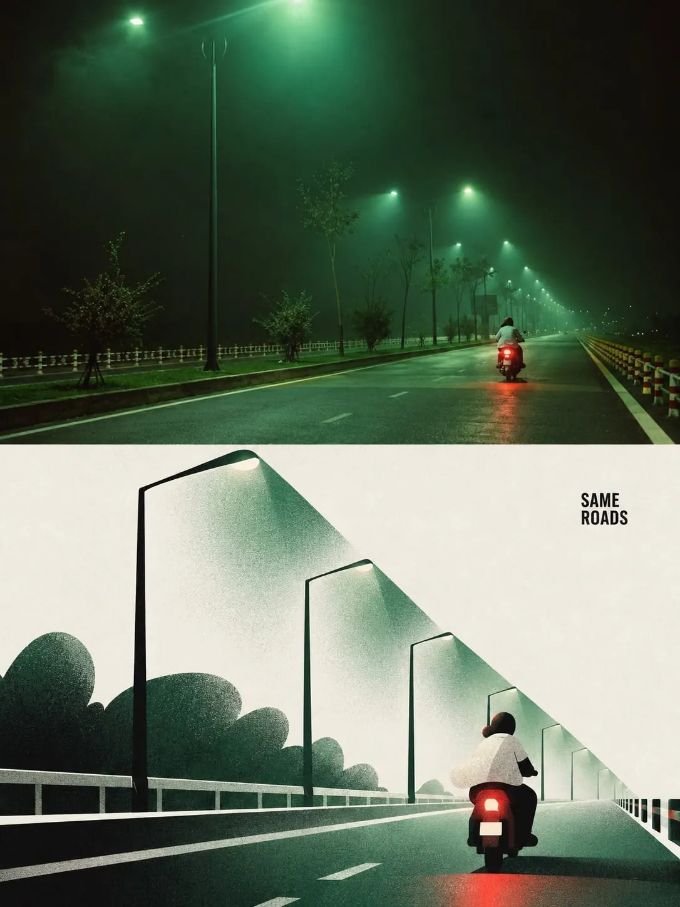
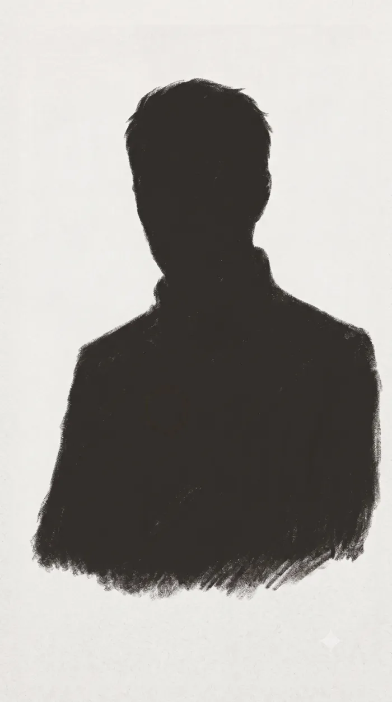
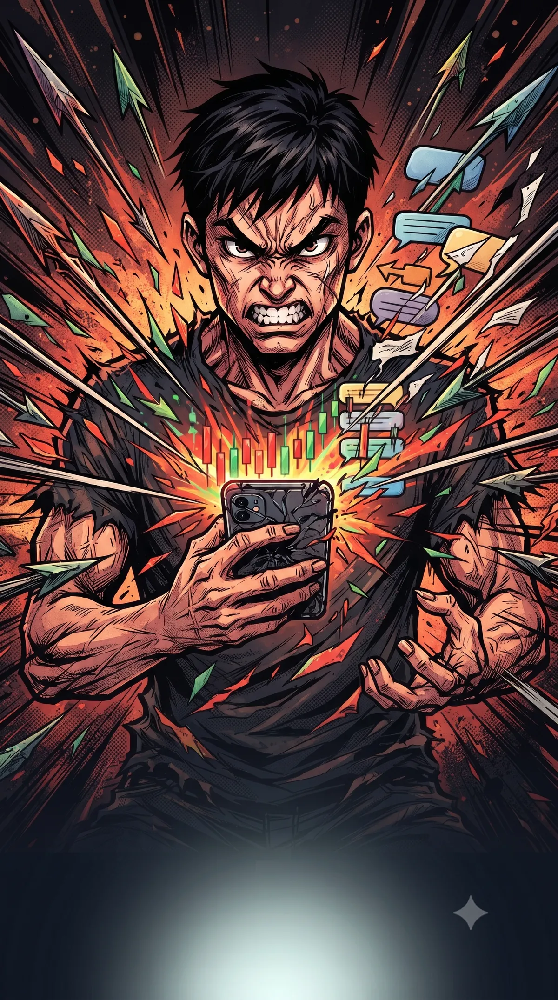
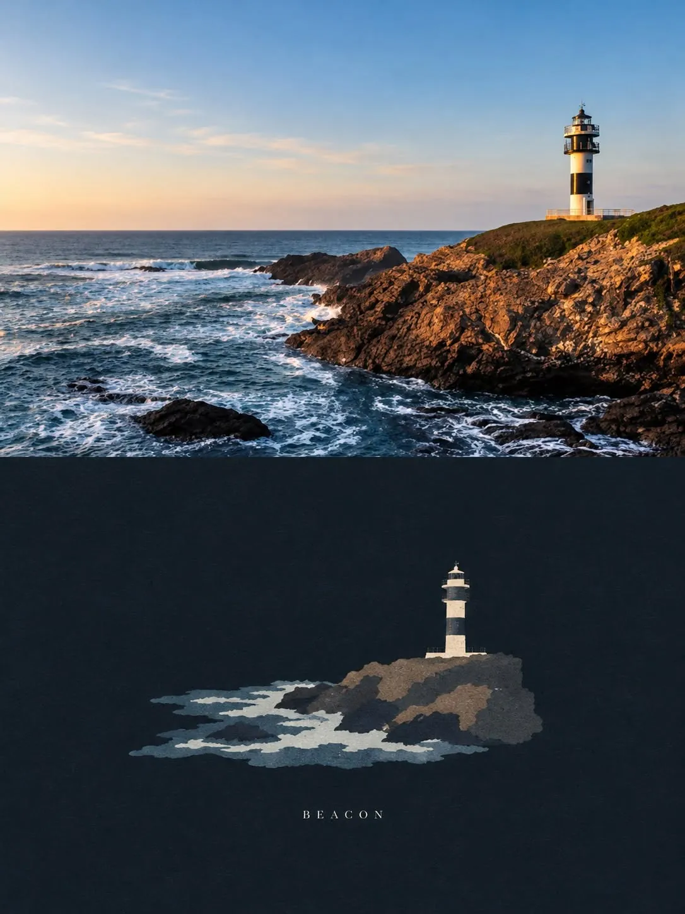
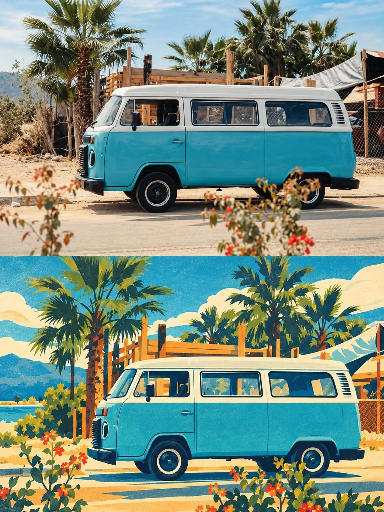
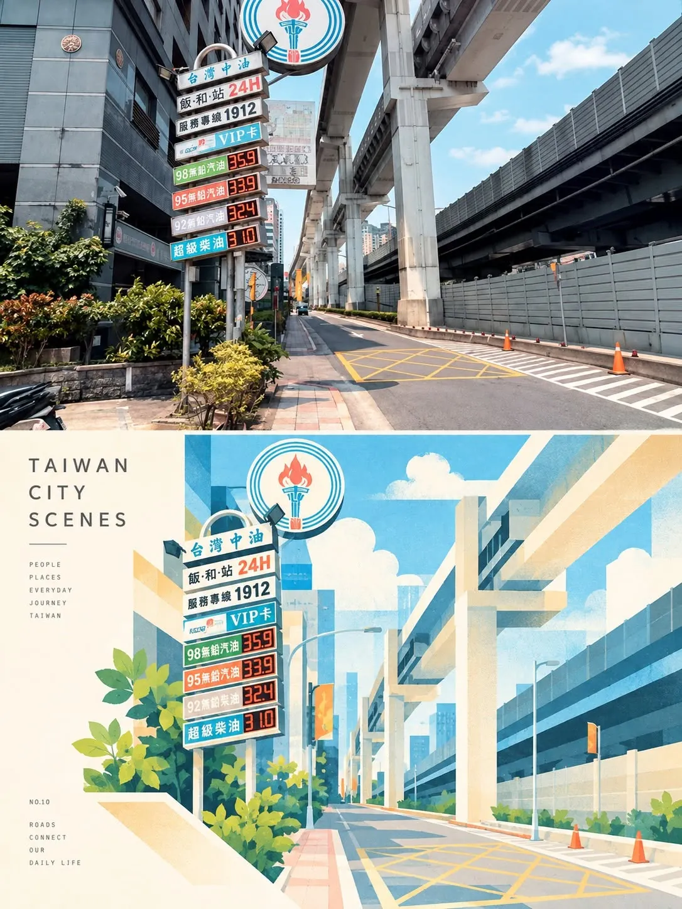
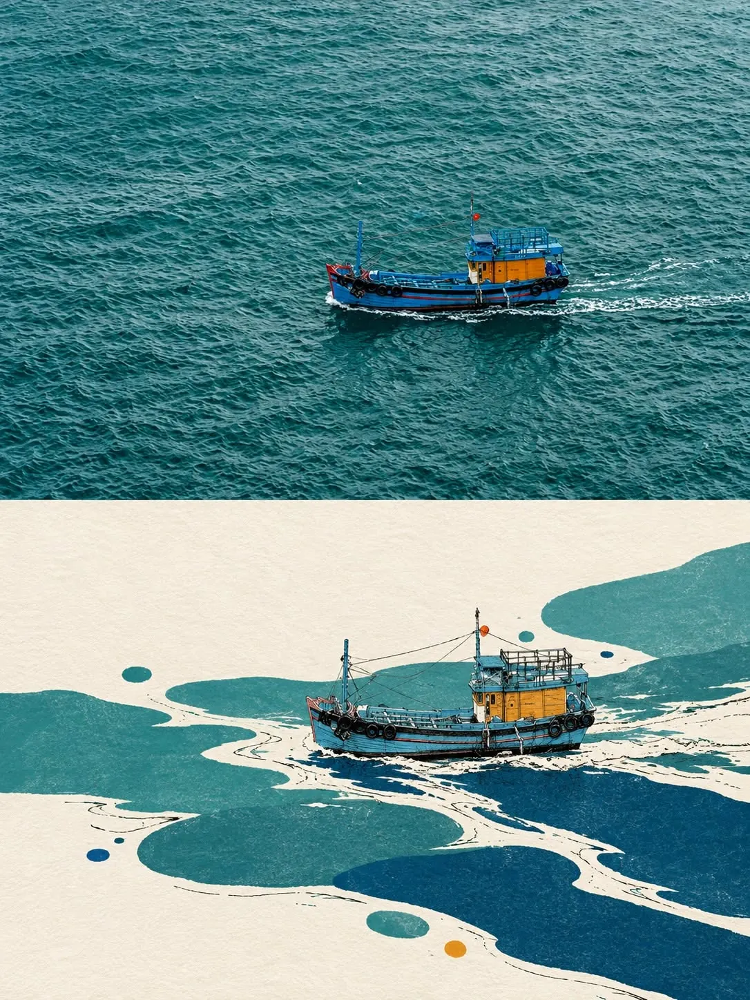
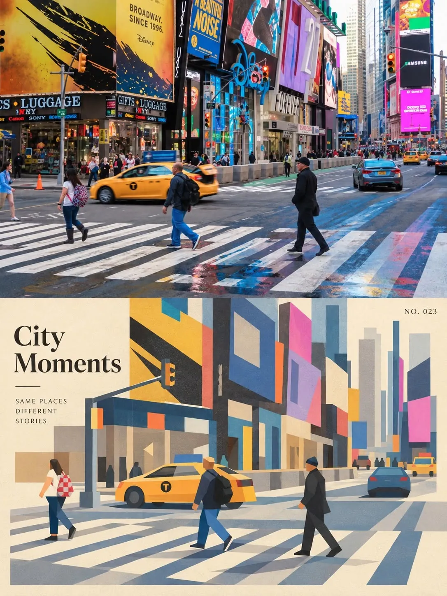

原因
結論與反應
美股｜台股
美股支線
台股支線
寬度與輪動
工具選股
挑一個風格 → 展開看詳盡提示詞 → 「複製完整提示詞」→ 貼 Gemini 生圖。新增風格：複製 templates/image-style.template.md → 生樣片 → 跑 build_gallery.py。

3:4 直式上下各半——上半原照忠實保留＋微調色；下半編輯感幾何角色海報（剪紙＋柔和噴槍陰影＋印刷質感、乾淨色塊無描邊、大留白、一個 2–5 字小黑標題）
Convert EACH uploaded photo into its OWN separate premium minimalist poster — do NOT combine images. Vertical 3:4 layout split into two EQUAL halves: TOP 50% = the ORIGINAL PHOTO, preserved as faithfully as possible (identity, proportions, pose, clothing, objects, natural light, texture, color mood), only subtle refined color grading; you may naturally extend the background or crop carefully to fit, but NEVER stretch, distort, replace, redraw or substantially alter important people or objects. BOTTOM 50% = an EDITORIAL CHARACTER POSTER: not a cartoon filter of the whole photo — first identify the 2–5 strongest visual memory points (main subject, action, body direction, outfit colors, key object, emotional tone, subject–environment relationship), remove most background detail, and redraw ONLY those essentials as a finished editorial character illustration. A person becomes a geometric character: small head, elongated CAPSULE-shaped limbs, large asymmetric body shape, simplified MITTEN-LIKE hands, minimal black cut-paper facial features; no realism or skin detail, but keep the original pose, action, hair silhouette, outfit colors and interaction so it clearly comes from the photo. Pick ONE important object / prop / plant / vehicle / furniture / architectural element / shadow / light source / environmental feature and ENLARGE it asymmetrically; it must ACTIVELY interact with the character (hug, lean on, sit on, overlap, wrap, drag, visually connect) to form a new simple memorable silhouette with strong asymmetry, diagonal movement, overlap, imbalance or big–small contrast. Style: flat geometric illustration + editorial character poster + modern cut-paper graphics + soft AIRBRUSH shadows + refined PRINT texture; large clean color blocks with crisp edges, NO cartoon outlines; only subtle dark-to-color AIRBRUSH spray gradients where shapes overlap, no glossy 3D or plastic effect. Background: warm off-white paper #F3F1EB with extremely subtle print texture. Choose 3–5 colors based primarily on the original photo; optional base colors: Near-black #10100F, Hot Pink #F553D2, Warm Red #F42726, Cobalt #293EA1, Emerald #13785D (adjust saturation/brightness as needed); do NOT force the same palette on every image. Keep clean negative space: with a person, the main illustration group occupies ~40–65% of the bottom half, leaving a clear open paper area; a scene WITHOUT people may become a near full-bleed flat landscape illustration. Add ONLY ONE small BOLD BLACK UPPERCASE SANS-SERIF caption in the negative space (typically top-left, 2–3 lines), 2–5 words based on the photo's place, action, mood or memory (e.g. STILL HERE, After the Rain, SLOW MORNING, Between Waves, JUST WAITING) — no large headline, no text box. The final image must read as "real photo → designed interpretation". NEGATIVES: no direct cartoon filter, no full-scene tracing, no cute chibi, no anime, no Disney style, no realistic face or skin in the bottom half, no thick outlines, no glossy 3D, no plastic material, no rough canvas, no distressed vintage texture, no busy background, no extra people, no extra limbs, no unnecessary text, no logo, no template-like composition, no combining multiple photos. Cast: whoever is IN THE UPLOADED PHOTO — never invent a new person. Top half keeps them photo-real and untouched; bottom half turns the same person into the geometric editorial character (small head, capsule limbs, asymmetric body block, simple hands, black cut-paper features) while keeping their pose, hair silhouette, outfit colors and interaction. If the person is Yoda himself, preserve his identifying traits in BOTH halves — the flat-top crew cut (平頭) hair silhouette and his actual outfit colors/build — so the bottom character still reads as him. One poster per photo; no extra people. Use the uploaded photo as-is. TOP 50%: original photo, subtle color grade only. BOTTOM 50%: (1) the person as a geometric cut-paper character in the SAME pose; (2) ONE key object from the photo enlarged asymmetrically and physically interacting with them (leaning on / hugging / sitting on); (3) diagonal movement and big–small contrast; (4) clean color blocks taken from the outfit and the object, airbrush shadows with same-hue gradients; (5) illustration ~40–65% of the half, open paper area left; (6) ONE small black 2–5 word title in the negative space. 3:4 vertical.
Convert EACH uploaded photo into its OWN separate premium minimalist poster — do NOT combine images. Vertical 3:4 layout split into two EQUAL halves: TOP 50% = the ORIGINAL PHOTO, preserved as faithfully as possible (identity, proportions, pose, clothing, objects, natural light, texture, color mood), only subtle refined color grading; you may naturally extend the background or crop carefully to fit, but NEVER stretch, distort, replace, redraw or substantially alter important people or objects. BOTTOM 50% = an EDITORIAL CHARACTER POSTER: not a cartoon filter of the whole photo — first identify the 2–5 strongest visual memory points (main subject, action, body direction, outfit colors, key object, emotional tone, subject–environment relationship), remove most background detail, and redraw ONLY those essentials as a finished editorial character illustration. A person becomes a geometric character: small head, elongated CAPSULE-shaped limbs, large asymmetric body shape, simplified MITTEN-LIKE hands, minimal black cut-paper facial features; no realism or skin detail, but keep the original pose, action, hair silhouette, outfit colors and interaction so it clearly comes from the photo. Pick ONE important object / prop / plant / vehicle / furniture / architectural element / shadow / light source / environmental feature and ENLARGE it asymmetrically; it must ACTIVELY interact with the character (hug, lean on, sit on, overlap, wrap, drag, visually connect) to form a new simple memorable silhouette with strong asymmetry, diagonal movement, overlap, imbalance or big–small contrast. Style: flat geometric illustration + editorial character poster + modern cut-paper graphics + soft AIRBRUSH shadows + refined PRINT texture; large clean color blocks with crisp edges, NO cartoon outlines; only subtle dark-to-color AIRBRUSH spray gradients where shapes overlap, no glossy 3D or plastic effect. Background: warm off-white paper #F3F1EB with extremely subtle print texture. Choose 3–5 colors based primarily on the original photo; optional base colors: Near-black #10100F, Hot Pink #F553D2, Warm Red #F42726, Cobalt #293EA1, Emerald #13785D (adjust saturation/brightness as needed); do NOT force the same palette on every image. Keep clean negative space: with a person, the main illustration group occupies ~40–65% of the bottom half, leaving a clear open paper area; a scene WITHOUT people may become a near full-bleed flat landscape illustration. Add ONLY ONE small BOLD BLACK UPPERCASE SANS-SERIF caption in the negative space (typically top-left, 2–3 lines), 2–5 words based on the photo's place, action, mood or memory (e.g. STILL HERE, After the Rain, SLOW MORNING, Between Waves, JUST WAITING) — no large headline, no text box. The final image must read as "real photo → designed interpretation". NEGATIVES: no direct cartoon filter, no full-scene tracing, no cute chibi, no anime, no Disney style, no realistic face or skin in the bottom half, no thick outlines, no glossy 3D, no plastic material, no rough canvas, no distressed vintage texture, no busy background, no extra people, no extra limbs, no unnecessary text, no logo, no template-like composition, no combining multiple photos. Cast: whoever is IN THE UPLOADED PHOTO — never invent a new person. Top half keeps them photo-real and untouched; bottom half turns the same person into the geometric editorial character (small head, capsule limbs, asymmetric body block, simple hands, black cut-paper features) while keeping their pose, hair silhouette, outfit colors and interaction. If the person is Yoda himself, preserve his identifying traits in BOTH halves — the flat-top crew cut (平頭) hair silhouette and his actual outfit colors/build — so the bottom character still reads as him. One poster per photo; no extra people. Same two-half poster from the uploaded photo, composed so the whole 3:4 frame can sit inside the central 3:4 safe area of a 9:16 Reels/Shorts canvas. Keep the small black title short and in the open paper area of the bottom half (the cover's big main-axis text is added separately in editing, not by the model). If the subject is Yoda, keep his flat-top crew cut silhouette and outfit colors recognizable in both halves. 3:4 vertical.

極簡炭筆線條、寥寥幾筆、大量留白；傳達智慧・沉思・決斷；可為半身或純剪影，單一金色點綴
ONE SINGLE MINIMAL CHARCOAL SILHOUETTE of a single figure — a head-and-shoulders BUST (head, neck, shoulders, upper chest) filled with VISIBLE HAND-MADE CHARCOAL BRUSH STROKES — dry-brush charcoal texture, rubbed and smeared, streaky charcoal marks, rough grainy feathered edges and a dry-brush lower hem (clearly hand-drawn charcoal, NOT a flat clean vector fill). STRICTLY FEATURELESS — a solid dark silhouette with ABSOLUTELY NO face: no eyes, no nose, no mouth, no facial features, no interior detail of any kind. The bust sits centred with VAST NEGATIVE SPACE around it (empty top, sides, and bottom). Warm paper-white background with subtle paper grain. PURE monochrome — deep charcoal / soft grey only, NO gold and NO color of any kind. The figure reads as WISE, CONTEMPLATIVE, DECISIVE through calm, natural, upright posture alone — a slight three-quarter turn, head level, gaze forward/slightly to the side; nothing theatrical. Vertical 9:16, generous breathing room, quiet space kept for a caption. NEGATIVES: NO face, no eyes, no nose, no mouth, no facial features/detail, no interior rendering, no flat clean vector fill, no smooth solid fill, no rendered scene or environment, no heavy background, no panels/grid/borders, no text, no watermark, no logo, no color, no photorealism, no clutter, no green skin, no oversized pointed ears, no Jedi robe, no long or styled hair. Cast: ONE recurring ORIGINAL figure — "The Sage" (Yoda Research 化身), original design, NOT any existing franchise character. A composed man who reads about 40, with a CLOSE-CROPPED FLAT-TOP CREW CUT (平頭 — very short hair, flat on top, short sides; the head silhouette is squarish on top, NOT rounded with hair volume). Convey WISDOM · CONTEMPLATION · DECISIVENESS through a calm, steady, straightforward gaze and a NATURAL, relaxed, upright bearing — NOT a posed, artsy or theatrical stance: no dramatic head-tilt, no lowered "thinking" head, no hand-to-chin cliché. Framed as a head-and-shoulders BUST (include upper chest), slight THREE-QUARTER turn, gaze forward or slightly to the side, head level. FEATURELESS silhouette — no facial features, no interior detail; a coat/collar only implied by the shape's edge — nothing more, and NO gold or colored accent. Keep the SAME simple character across shots. No green skin, no pointed ears, no Jedi robe, no long or styled hair. A FEATURELESS charcoal-SMUDGE SILHOUETTE bust of the Sage — head + neck + shoulders + upper chest — flat-top crew cut (平頭, squarish short-hair top), slight three-quarter turn, head level, gaze forward/slightly to the side, natural and relaxed (not posed). ONE soft charcoal shape, rubbed/smeared with rough grainy feathered edges and a dry-brush lower hem, on warm paper-white. Centred with vast empty space all around. Pure charcoal, NO accent, no facial features. Nothing else. 9:16, caption room at the bottom.
ONE SINGLE MINIMAL CHARCOAL SILHOUETTE of a single figure — a head-and-shoulders BUST (head, neck, shoulders, upper chest) filled with VISIBLE HAND-MADE CHARCOAL BRUSH STROKES — dry-brush charcoal texture, rubbed and smeared, streaky charcoal marks, rough grainy feathered edges and a dry-brush lower hem (clearly hand-drawn charcoal, NOT a flat clean vector fill). STRICTLY FEATURELESS — a solid dark silhouette with ABSOLUTELY NO face: no eyes, no nose, no mouth, no facial features, no interior detail of any kind. The bust sits centred with VAST NEGATIVE SPACE around it (empty top, sides, and bottom). Warm paper-white background with subtle paper grain. PURE monochrome — deep charcoal / soft grey only, NO gold and NO color of any kind. The figure reads as WISE, CONTEMPLATIVE, DECISIVE through calm, natural, upright posture alone — a slight three-quarter turn, head level, gaze forward/slightly to the side; nothing theatrical. Vertical 9:16, generous breathing room, quiet space kept for a caption. NEGATIVES: NO face, no eyes, no nose, no mouth, no facial features/detail, no interior rendering, no flat clean vector fill, no smooth solid fill, no rendered scene or environment, no heavy background, no panels/grid/borders, no text, no watermark, no logo, no color, no photorealism, no clutter, no green skin, no oversized pointed ears, no Jedi robe, no long or styled hair. Cast: ONE recurring ORIGINAL figure — "The Sage" (Yoda Research 化身), original design, NOT any existing franchise character. A composed man who reads about 40, with a CLOSE-CROPPED FLAT-TOP CREW CUT (平頭 — very short hair, flat on top, short sides; the head silhouette is squarish on top, NOT rounded with hair volume). Convey WISDOM · CONTEMPLATION · DECISIVENESS through a calm, steady, straightforward gaze and a NATURAL, relaxed, upright bearing — NOT a posed, artsy or theatrical stance: no dramatic head-tilt, no lowered "thinking" head, no hand-to-chin cliché. Framed as a head-and-shoulders BUST (include upper chest), slight THREE-QUARTER turn, gaze forward or slightly to the side, head level. FEATURELESS silhouette — no facial features, no interior detail; a coat/collar only implied by the shape's edge — nothing more, and NO gold or colored accent. Keep the SAME simple character across shots. No green skin, no pointed ears, no Jedi robe, no long or styled hair. The Sage in a few charcoal lines, flat-top crew cut (平頭): standing naturally, head level, looking straight ahead — calm and grounded. NO hand-to-chin, NO lowered "thinking" head, nothing theatrical. Only essential lines — coat by 2–3 strokes, face by a few marks. Plain background, generous white space. Pure charcoal, no accent. Mood: 自然、內斂、篤定。 9:16.
ONE SINGLE MINIMAL CHARCOAL SILHOUETTE of a single figure — a head-and-shoulders BUST (head, neck, shoulders, upper chest) filled with VISIBLE HAND-MADE CHARCOAL BRUSH STROKES — dry-brush charcoal texture, rubbed and smeared, streaky charcoal marks, rough grainy feathered edges and a dry-brush lower hem (clearly hand-drawn charcoal, NOT a flat clean vector fill). STRICTLY FEATURELESS — a solid dark silhouette with ABSOLUTELY NO face: no eyes, no nose, no mouth, no facial features, no interior detail of any kind. The bust sits centred with VAST NEGATIVE SPACE around it (empty top, sides, and bottom). Warm paper-white background with subtle paper grain. PURE monochrome — deep charcoal / soft grey only, NO gold and NO color of any kind. The figure reads as WISE, CONTEMPLATIVE, DECISIVE through calm, natural, upright posture alone — a slight three-quarter turn, head level, gaze forward/slightly to the side; nothing theatrical. Vertical 9:16, generous breathing room, quiet space kept for a caption. NEGATIVES: NO face, no eyes, no nose, no mouth, no facial features/detail, no interior rendering, no flat clean vector fill, no smooth solid fill, no rendered scene or environment, no heavy background, no panels/grid/borders, no text, no watermark, no logo, no color, no photorealism, no clutter, no green skin, no oversized pointed ears, no Jedi robe, no long or styled hair. Cast: ONE recurring ORIGINAL figure — "The Sage" (Yoda Research 化身), original design, NOT any existing franchise character. A composed man who reads about 40, with a CLOSE-CROPPED FLAT-TOP CREW CUT (平頭 — very short hair, flat on top, short sides; the head silhouette is squarish on top, NOT rounded with hair volume). Convey WISDOM · CONTEMPLATION · DECISIVENESS through a calm, steady, straightforward gaze and a NATURAL, relaxed, upright bearing — NOT a posed, artsy or theatrical stance: no dramatic head-tilt, no lowered "thinking" head, no hand-to-chin cliché. Framed as a head-and-shoulders BUST (include upper chest), slight THREE-QUARTER turn, gaze forward or slightly to the side, head level. FEATURELESS silhouette — no facial features, no interior detail; a coat/collar only implied by the shape's edge — nothing more, and NO gold or colored accent. Keep the SAME simple character across shots. No green skin, no pointed ears, no Jedi robe, no long or styled hair. The Sage, minimal bust, upright, looking straight ahead with a calm, decisive gaze — a single firm brow line and steady eyes carry the authority. Drawn in a few confident charcoal strokes; plain background, wide negative space. Pure charcoal, no accent. Mood: 決斷、篤定、看透。 9:16.

賽璐璐上色、粗黑線、速度線、網點、鮮豔飽和
ONE SINGLE full-bleed image — a single continuous scene, NOT a comic page: no panels, no grid, no split-screen, no multiple frames, no borders or gutters. Dynamic full-color action-manga illustration style (single-frame key art, not a comic strip). Bold confident black ink outlines, aggressive speed lines, screentone/halftone shading, high-contrast cel shading, vivid saturated colors, energetic angle, strong sense of motion. Vertical 9:16 portrait, single frame; subject in the upper two-thirds with empty space at the bottom for captions. NEGATIVES: no panels, no grid, no multiple frames, no borders, no text, no watermark, no signature, no logo. Recurring character: a young man, 25–30, short black hair, plain dark crew-neck T-shirt — an ordinary retail investor. Keep face/hair/wardrobe consistent across every shot. He looks down at a smartphone; the glowing screen bursts with red/green candlestick charts and stacked pop-up chat bubbles; a chaotic swirl of colorful bubbles, arrows and notification dots explodes around his head, speed lines converging on the phone. Expression: half-skeptical, overwhelmed. Upper-body bust, slight high angle.
ONE SINGLE full-bleed image — a single continuous scene, NOT a comic page: no panels, no grid, no split-screen, no multiple frames, no borders or gutters. Dynamic full-color action-manga illustration style (single-frame key art, not a comic strip). Bold confident black ink outlines, aggressive speed lines, screentone/halftone shading, high-contrast cel shading, vivid saturated colors, energetic angle, strong sense of motion. Vertical 9:16 portrait, single frame; subject in the upper two-thirds with empty space at the bottom for captions. NEGATIVES: no panels, no grid, no multiple frames, no borders, no text, no watermark, no signature, no logo. Recurring character: a young man, 25–30, short black hair, plain dark crew-neck T-shirt — an ordinary retail investor. Keep face/hair/wardrobe consistent across every shot. He clutches his head with both hands, eyes wide, mouth open mid-gasp; explosive radiating speed lines and abstract shockwaves press in from every side; dramatic saturated reds and dark shadows. Close-up to chest, aggressive foreshortening.
ONE SINGLE full-bleed image — a single continuous scene, NOT a comic page: no panels, no grid, no split-screen, no multiple frames, no borders or gutters. Dynamic full-color action-manga illustration style (single-frame key art, not a comic strip). Bold confident black ink outlines, aggressive speed lines, screentone/halftone shading, high-contrast cel shading, vivid saturated colors, energetic angle, strong sense of motion. Vertical 9:16 portrait, single frame; subject in the upper two-thirds with empty space at the bottom for captions. NEGATIVES: no panels, no grid, no multiple frames, no borders, no text, no watermark, no signature, no logo. Recurring character: a young man, 25–30, short black hair, plain dark crew-neck T-shirt — an ordinary retail investor. Keep face/hair/wardrobe consistent across every shot. He glances at his phone with a smug, self-satisfied smirk, one eyebrow raised, leaning back, overconfident — a cocky glint in his eye. Warm punchy colors, sparkle highlights, light speed lines. Upper-body bust.
ONE SINGLE full-bleed image — a single continuous scene, NOT a comic page: no panels, no grid, no split-screen, no multiple frames, no borders or gutters. Dynamic full-color action-manga illustration style (single-frame key art, not a comic strip). Bold confident black ink outlines, aggressive speed lines, screentone/halftone shading, high-contrast cel shading, vivid saturated colors, energetic angle, strong sense of motion. Vertical 9:16 portrait, single frame; subject in the upper two-thirds with empty space at the bottom for captions. NEGATIVES: no panels, no grid, no multiple frames, no borders, no text, no watermark, no signature, no logo. Recurring character: a young man, 25–30, short black hair, plain dark crew-neck T-shirt — an ordinary retail investor. Keep face/hair/wardrobe consistent across every shot. He stares at his phone, smile gone, face fallen, hollow eyes, slumped shoulders; cold desaturated blue-grey palette with the color draining away, heavy halftone shadow. Upper-body, pulled back to emphasize isolation.
ONE SINGLE full-bleed image — a single continuous scene, NOT a comic page: no panels, no grid, no split-screen, no multiple frames, no borders or gutters. Dynamic full-color action-manga illustration style (single-frame key art, not a comic strip). Bold confident black ink outlines, aggressive speed lines, screentone/halftone shading, high-contrast cel shading, vivid saturated colors, energetic angle, strong sense of motion. Vertical 9:16 portrait, single frame; subject in the upper two-thirds with empty space at the bottom for captions. NEGATIVES: no panels, no grid, no multiple frames, no borders, no text, no watermark, no signature, no logo. Recurring character: a young man, 25–30, short black hair, plain dark crew-neck T-shirt — an ordinary retail investor. Keep face/hair/wardrobe consistent across every shot. Calm, composed, focused, reading/analyzing from a tablet; clear determined eyes, quiet self-possession. Confident clean linework, warm balanced heroic lighting, controlled calm focus lines. Upper-body, slight low angle.
厚塗概念藝術、動勢強、前衛戰士、暴力美學（帥而狠，非血腥）
ONE SINGLE UNIFIED FULL-BLEED IMAGE — a single continuous scene, NOT a comic page: do NOT split into panels, grids, tiles, triptychs or multiple frames, and add NO borders or gutters. CRITICAL — MAXIMUM DETAIL, NO LAZINESS: densely rendered, gallery-quality cinematic anime concept-art key illustration. Render EVERY element listed below; do NOT simplify, abbreviate, omit, or leave any area blank — fill the whole 9:16 frame, with foreground, midground and background rendered as DEPTH LAYERS INSIDE THE SAME single image (not separate panels). Painterly marker/gouache brushwork with visible directional strokes and palette-knife texture; crisp focal detail against richer painterly passages; strong cinematic light with bloom, backlight/rim light and atmospheric haze; bold diagonal ribbon/slash shapes and speed streaks; high dynamic range, deep blacks, high contrast; stylish, intense, kinetic "violence aesthetics" mood (stylized, never gory). Vertical 9:16, single frame; keep a readable lower-third for captions. NEGATIVES: NO panels, NO grid, NO split-screen, NO triptych, NO multiple frames or tiles, NO comic-strip layout, NO borders or gutters, no text, no watermark, no signature, no logo, NO empty/blank/plain background, NO minimalism, NO missing outfit pieces. Cast: fierce young "market warriors" in avant-garde techwear / battle gear. Render the COMPLETE outfit and every accessory named per scene (jackets, plating, harnesses, straps, buckles, pouches, gloves, goggles, scarves/capes). The weapon is a glowing trading-device (phone/tablet reimagined); the market's noise — candlesticks, tickers, arrows, chat-bubbles — is the enemy energy densely swirling around them. Mixed genders across shots; each fighter is distinct. MUST RENDER ALL OF THE FOLLOWING, none omitted: (1) CHARACTER: a fierce young WOMAN street-fighter — sharp determined face, wind-blown hair; FULL outfit: asymmetric armored techwear jacket, layered utility harness with visible pouches and buckles, fingerless tactical gloves, goggles pushed up on her forehead. (2) POSE: gripping a glowing trading-device two-handed like a blade, leaning into camera, eyes wide and locked, jaw set. (3) CAMERA: low Dutch-angle worm's-eye, wide lens, tilted horizon. (4) FOREGROUND (sharp, in front of her): candlestick-bar shrapnel and a large red down-arrow slashing diagonally past the lens; scattered glowing chat-bubble fragments. (5) BACKGROUND (fills the whole frame, NOT blank): a towering swirling vortex-wall built from hundreds of glowing market tickers, red/green candlestick charts, notification pop-ups, group-chat bubbles and gurus' arrows spiralling inward; diagonal ticker-tape ribbons. (6) LIGHTING: the device screen UNDER-lights her face flickering red/green; cyan rim light; magenta bounce. (7) PARTICLES (visible): floating sparks, screen-glow dust, fine motion streaks. (8) COLOR SCRIPT (use all three): electric-cyan dominant + hot-magenta accent + red/green candlestick pops. (9) MOOD: hypnotized, pulled into the noise.
ONE SINGLE UNIFIED FULL-BLEED IMAGE — a single continuous scene, NOT a comic page: do NOT split into panels, grids, tiles, triptychs or multiple frames, and add NO borders or gutters. CRITICAL — MAXIMUM DETAIL, NO LAZINESS: densely rendered, gallery-quality cinematic anime concept-art key illustration. Render EVERY element listed below; do NOT simplify, abbreviate, omit, or leave any area blank — fill the whole 9:16 frame, with foreground, midground and background rendered as DEPTH LAYERS INSIDE THE SAME single image (not separate panels). Painterly marker/gouache brushwork with visible directional strokes and palette-knife texture; crisp focal detail against richer painterly passages; strong cinematic light with bloom, backlight/rim light and atmospheric haze; bold diagonal ribbon/slash shapes and speed streaks; high dynamic range, deep blacks, high contrast; stylish, intense, kinetic "violence aesthetics" mood (stylized, never gory). Vertical 9:16, single frame; keep a readable lower-third for captions. NEGATIVES: NO panels, NO grid, NO split-screen, NO triptych, NO multiple frames or tiles, NO comic-strip layout, NO borders or gutters, no text, no watermark, no signature, no logo, NO empty/blank/plain background, NO minimalism, NO missing outfit pieces. Cast: fierce young "market warriors" in avant-garde techwear / battle gear. Render the COMPLETE outfit and every accessory named per scene (jackets, plating, harnesses, straps, buckles, pouches, gloves, goggles, scarves/capes). The weapon is a glowing trading-device (phone/tablet reimagined); the market's noise — candlesticks, tickers, arrows, chat-bubbles — is the enemy energy densely swirling around them. Mixed genders across shots; each fighter is distinct. MUST RENDER ALL OF THE FOLLOWING, none omitted: (1) CHARACTER: a young MAN fighter — battle-worn face, sweat, wild dark hair; FULL outfit: torn combat vest with straps, bandaged forearms, dog-tag chain. (2) POSE: both hands clawing into his hair, mouth open mid-roar, straining veins. (3) CAMERA: extreme close-up, aggressive wide-angle foreshortening, slight fish-eye, face filling the upper frame. (4) FOREGROUND (razor-sharp): his clawing fingers and knuckles. (5) BACKGROUND (fills the frame, NOT blank): an inferno-storm of shredded speech-shapes, concentric jagged shockwave rings, red exclamation slashes and flying debris exploding outward. (6) LIGHTING: a blinding explosive blast directly BEHIND his head (backlit), face thrown into hot rim-lit shadow. (7) PARTICLES (visible): rising ash, ember sparks, smoke, heat shimmer. (8) COLOR SCRIPT (use all three): molten-orange dominant + crimson core fading to charred black + a white-hot stab at the blast center. (9) MOOD: detonation, total overload.
ONE SINGLE UNIFIED FULL-BLEED IMAGE — a single continuous scene, NOT a comic page: do NOT split into panels, grids, tiles, triptychs or multiple frames, and add NO borders or gutters. CRITICAL — MAXIMUM DETAIL, NO LAZINESS: densely rendered, gallery-quality cinematic anime concept-art key illustration. Render EVERY element listed below; do NOT simplify, abbreviate, omit, or leave any area blank — fill the whole 9:16 frame, with foreground, midground and background rendered as DEPTH LAYERS INSIDE THE SAME single image (not separate panels). Painterly marker/gouache brushwork with visible directional strokes and palette-knife texture; crisp focal detail against richer painterly passages; strong cinematic light with bloom, backlight/rim light and atmospheric haze; bold diagonal ribbon/slash shapes and speed streaks; high dynamic range, deep blacks, high contrast; stylish, intense, kinetic "violence aesthetics" mood (stylized, never gory). Vertical 9:16, single frame; keep a readable lower-third for captions. NEGATIVES: NO panels, NO grid, NO split-screen, NO triptych, NO multiple frames or tiles, NO comic-strip layout, NO borders or gutters, no text, no watermark, no signature, no logo, NO empty/blank/plain background, NO minimalism, NO missing outfit pieces. Cast: fierce young "market warriors" in avant-garde techwear / battle gear. Render the COMPLETE outfit and every accessory named per scene (jackets, plating, harnesses, straps, buckles, pouches, gloves, goggles, scarves/capes). The weapon is a glowing trading-device (phone/tablet reimagined); the market's noise — candlesticks, tickers, arrows, chat-bubbles — is the enemy energy densely swirling around them. Mixed genders across shots; each fighter is distinct. MUST RENDER ALL OF THE FOLLOWING, none omitted: (1) CHARACTER: a cocky young WOMAN gunslinger — smug smirk, eyebrow raised; FULL outfit: bold red scarf/half-cape, sleek plated bodysuit with panel lines, one glove off, thigh holster. (2) POSE: relaxed lean-back swagger, idly twirling a glowing coin-token, glancing at her device. (3) CAMERA: slightly low hero angle, medium telephoto, shallow depth of field. (4) FOREGROUND: soft golden bokeh and a rising green up-arrow ribbon curling past. (5) BACKGROUND (fills the frame, NOT blank): a warm haze packed with ascending green numbers, coins and candlesticks dissolving into layered light-bokeh; diagonal god-rays. (6) LIGHTING: a warm sun-flare HALO blooming behind her head — a fake "sunrise of success" — with lens-flare streaks and warm rim light. (7) PARTICLES (visible): dust motes in sun, drifting glints. (8) COLOR SCRIPT (use all three): gold + amber + coral warm dominant, with cool-teal shadow accents. (9) MOOD: intoxicating overconfidence, ironically too-perfect glow.
ONE SINGLE UNIFIED FULL-BLEED IMAGE — a single continuous scene, NOT a comic page: do NOT split into panels, grids, tiles, triptychs or multiple frames, and add NO borders or gutters. CRITICAL — MAXIMUM DETAIL, NO LAZINESS: densely rendered, gallery-quality cinematic anime concept-art key illustration. Render EVERY element listed below; do NOT simplify, abbreviate, omit, or leave any area blank — fill the whole 9:16 frame, with foreground, midground and background rendered as DEPTH LAYERS INSIDE THE SAME single image (not separate panels). Painterly marker/gouache brushwork with visible directional strokes and palette-knife texture; crisp focal detail against richer painterly passages; strong cinematic light with bloom, backlight/rim light and atmospheric haze; bold diagonal ribbon/slash shapes and speed streaks; high dynamic range, deep blacks, high contrast; stylish, intense, kinetic "violence aesthetics" mood (stylized, never gory). Vertical 9:16, single frame; keep a readable lower-third for captions. NEGATIVES: NO panels, NO grid, NO split-screen, NO triptych, NO multiple frames or tiles, NO comic-strip layout, NO borders or gutters, no text, no watermark, no signature, no logo, NO empty/blank/plain background, NO minimalism, NO missing outfit pieces. Cast: fierce young "market warriors" in avant-garde techwear / battle gear. Render the COMPLETE outfit and every accessory named per scene (jackets, plating, harnesses, straps, buckles, pouches, gloves, goggles, scarves/capes). The weapon is a glowing trading-device (phone/tablet reimagined); the market's noise — candlesticks, tickers, arrows, chat-bubbles — is the enemy energy densely swirling around them. Mixed genders across shots; each fighter is distinct. MUST RENDER ALL OF THE FOLLOWING, none omitted: (1) CHARACTER: a lone young MAN warrior — head bowed, hollow face; FULL outfit: heavy ragged cloak, cracked shoulder armor, worn bracers. (2) POSE: kneeling, slumped, device loose in one hand, mirror reflection in the water. (3) CAMERA: high bird's-eye looking down, ultra-wide; the figure small and off-center with heavy negative space that is still richly rendered. (4) FOREGROUND: drifting ash and a broken red candlestick sinking into shallow water. (5) BACKGROUND (fills the frame, NOT blank): a cavernous dim ruined trading-arena flooded with shallow water; faint sinking red charts visible under the surface; distant cold light shafts and mist. (6) LIGHTING: a single cold overhead pool of light casting one long stark shadow; everything else falling to dark. (7) PARTICLES (visible): still-water ripples and reflections, floating ash, cold fog. (8) COLOR SCRIPT (use all three): deep-indigo dominant + slate blue-grey desaturated + ONE dying ember-red reflection as the only warm note. (9) MOOD: lonely defeat, no one answers for the loss.
ONE SINGLE UNIFIED FULL-BLEED IMAGE — a single continuous scene, NOT a comic page: do NOT split into panels, grids, tiles, triptychs or multiple frames, and add NO borders or gutters. CRITICAL — MAXIMUM DETAIL, NO LAZINESS: densely rendered, gallery-quality cinematic anime concept-art key illustration. Render EVERY element listed below; do NOT simplify, abbreviate, omit, or leave any area blank — fill the whole 9:16 frame, with foreground, midground and background rendered as DEPTH LAYERS INSIDE THE SAME single image (not separate panels). Painterly marker/gouache brushwork with visible directional strokes and palette-knife texture; crisp focal detail against richer painterly passages; strong cinematic light with bloom, backlight/rim light and atmospheric haze; bold diagonal ribbon/slash shapes and speed streaks; high dynamic range, deep blacks, high contrast; stylish, intense, kinetic "violence aesthetics" mood (stylized, never gory). Vertical 9:16, single frame; keep a readable lower-third for captions. NEGATIVES: NO panels, NO grid, NO split-screen, NO triptych, NO multiple frames or tiles, NO comic-strip layout, NO borders or gutters, no text, no watermark, no signature, no logo, NO empty/blank/plain background, NO minimalism, NO missing outfit pieces. Cast: fierce young "market warriors" in avant-garde techwear / battle gear. Render the COMPLETE outfit and every accessory named per scene (jackets, plating, harnesses, straps, buckles, pouches, gloves, goggles, scarves/capes). The weapon is a glowing trading-device (phone/tablet reimagined); the market's noise — candlesticks, tickers, arrows, chat-bubbles — is the enemy energy densely swirling around them. Mixed genders across shots; each fighter is distinct. MUST RENDER ALL OF THE FOLLOWING, none omitted: (1) CHARACTER: a composed young WOMAN hero — calm sharp eyes, faint resolute look; FULL outfit: elegant avant-garde long-coat with clean armored panel lines, high collar, structured shoulders. (2) POSE: standing tall, grounded powerful stance, holding a bladed tablet-device at rest like a sheathed katana, coat edge catching wind. (3) CAMERA: strong low hero angle, slight worm's-eye, medium lens. (4) FOREGROUND: a few crisp glowing chart-glyphs orbiting in orderly arcs (structured, not chaotic). (5) BACKGROUND (fills the frame, NOT blank): a clearing dawn horizon — layered clouds, calm sea, structured geometric light rays; the storm behind resolved into order. (6) LIGHTING: a clean rising sun/moon disc glowing directly behind her as a halo, ordered rays fanning out; strong rim light. (7) PARTICLES (visible): gentle drifting light particles, soft haze, lens bloom. (8) COLOR SCRIPT (use all three): teal + cyan dominant, warm-gold backlight rim, one controlled crimson accent thread. (9) MOOD: earned clarity, quiet power.

3:4 直式上下兩等分（像對折卡片，折線不畫出）——上半原照只做細微藝術刊物調色、全景構圖頭頂留呼吸空間；下半在「原照最深色再壓暗」的深色底上，把主題簡化成無輪廓、幾乎無細節的平面手工剪邊剪影，疊成一小群偏心坐在看不見的基線上，上方大片暗色留白；只有一個形狀發亮（近暖白），其餘降飽和粉灰色；全畫面細緻粉霧顆粒；群組旁一個極小、纖細、字距拉開的大寫 serif 單字
Turn ONE uploaded photograph into ONE standalone premium design poster — never combine several photos into one image. Vertical 3:4, divided into two equal horizontal halves like a folded card; the fold sits on the horizontal center line but is never drawn, and no silhouette may touch or cross it. TOP = the ORIGINAL PHOTOGRAPH: keep subject identity, structure, pose, proportions, realistic texture, natural light, shadows and original color atmosphere; apply only subtle, refined editorial color grading (art magazine / independent publication / exhibition photography); extend the surroundings naturally if needed but never stretch, distort, repaint or alter the subject; comfortable wide framing with breathing room above the subject's head, never a tight crop; no text in the top half. BOTTOM = a FLAT SILHOUETTE STILL LIFE on a dark ground: identify the photo's most recognizable subject, silhouette, structure, pose and narrative relationship, and extract only the essential subject plus a few closely related elements — never reproduce the full photo or redraw the whole scene. Render every form (people, animals, buildings, objects, plants, landscape) as a solid, outline-free, almost detail-free flat silhouette in front or side view, each mostly one pure color with soft, slightly irregular hand-cut edges; only where absolutely necessary, a slightly darker shape of the same hue hints at an opening, gap or structural turn. Several flat silhouettes overlap into ONE compact, clearly layered group against a continuous dark background, varied in height and scale, resting quietly on an invisible horizontal baseline, placed slightly off-center so the opposite side stays open for type; elements kept close together, not scattered. Depth only through overlap and subtle tonal difference — no perspective, no gradients, no realistic lighting, no cast shadows. Exercise independent artistic judgment to improve weak source compositions: remove distracting surroundings, convert complex subjects into front or side silhouettes, pull scattered elements together; for streets, corridors, landscapes or interiors choose one representative object or meaningful fragment. Pulled-back panoramic composition, as if the photographer stepped back: the whole group a little smaller than expected, generous dark negative space on every side and an especially wide empty field above it, like the top margin of a carefully mounted artwork. Palette from the photo's emotional colors: take the photo's DEEPEST color, darken it while keeping a subtle trace of its original hue, and use it as the main background (never pure black); desaturate all remaining colors and soften them with off-white into restrained powdery color blocks; raise EXACTLY ONE shape to a bright tone close to warm white, as if gently lit — the single glowing accent and visual focus; tune warm/cool balance per photo. Apply a fine dry-brush powdery texture — extremely fine, dense, powder-like grain — across the dark background and all silhouettes, giving a soft, matte, slightly hazy surface; no scratches, stains, creases, distressed print or artificial aging. Add only ONE small editorial word or extremely short title inspired by a specific object, place, action or recognizable detail in the photo (language may vary): tiny, thin, elegant UPPERCASE serif with wide letter-spacing, clearly smaller than the silhouette group, set in the dark negative space beside the composition with a generous quiet gap, in a soft pale tint derived from the brightest silhouette color. No captions, secondary lines, labels, slogans, generic inspirational phrases, logos, watermarks or numbering. Mood: quiet, warm, intimate, slightly nocturnal — a refined still-life illustration for an independent art publication or a collectible art postcard. Avoid full-scene replication, crowded backgrounds, cartoon aesthetics, generic poster templates, disconnected isolated silhouettes, visible outlines, equally bright shapes without a clear focus, 3D rendering, realistic shadows, excessive decoration, vivid candy colors and overly precise vector edges. Cast: whoever or whatever is IN THE UPLOADED PHOTO — never invent a new person, animal, vehicle or building. Top half keeps them photo-real and untouched. Bottom half reduces the main subject to ONE flat, outline-free silhouette in front or side view — usually the glowing near-warm-white shape (the person's body or face, the landmark's brightest part, the dress and veil) — with only minimal facial cues where needed (a closed-eye line, the lips), never full features. Companions and surroundings become a few desaturated powdery-grey silhouettes overlapped into the same compact group. If the person is Yoda himself, keep his identifying outline — the flat-top crew cut (平頭) head silhouette and his build — so the silhouette still reads as him. One poster per photo; no extra figures. Use the uploaded portrait as-is. TOP 50%: original photo with only subtle editorial grading, wide framing and breathing room above the head. BOTTOM 50%: on a background made from the photo's deepest color darkened (e.g. forest brown-black or ink green-grey, not pure black), the person as one flat side-view silhouette in near-warm white — face reduced to a closed-eye line and lips — overlapped with two or three desaturated powdery-grey shapes from the photo (a few hand-cut leaves, a branch, a railing fragment), forming one small group slightly right of center on an invisible baseline, with a very wide dark field above. Fine dry-brush powder grain everywhere. One tiny uppercase serif word with wide tracking (e.g. a verb of the gesture such as BREATHE or MOMENT) in a pale tint beside the group. No other text. 3:4 vertical, fold line never drawn.
Turn ONE uploaded photograph into ONE standalone premium design poster — never combine several photos into one image. Vertical 3:4, divided into two equal horizontal halves like a folded card; the fold sits on the horizontal center line but is never drawn, and no silhouette may touch or cross it. TOP = the ORIGINAL PHOTOGRAPH: keep subject identity, structure, pose, proportions, realistic texture, natural light, shadows and original color atmosphere; apply only subtle, refined editorial color grading (art magazine / independent publication / exhibition photography); extend the surroundings naturally if needed but never stretch, distort, repaint or alter the subject; comfortable wide framing with breathing room above the subject's head, never a tight crop; no text in the top half. BOTTOM = a FLAT SILHOUETTE STILL LIFE on a dark ground: identify the photo's most recognizable subject, silhouette, structure, pose and narrative relationship, and extract only the essential subject plus a few closely related elements — never reproduce the full photo or redraw the whole scene. Render every form (people, animals, buildings, objects, plants, landscape) as a solid, outline-free, almost detail-free flat silhouette in front or side view, each mostly one pure color with soft, slightly irregular hand-cut edges; only where absolutely necessary, a slightly darker shape of the same hue hints at an opening, gap or structural turn. Several flat silhouettes overlap into ONE compact, clearly layered group against a continuous dark background, varied in height and scale, resting quietly on an invisible horizontal baseline, placed slightly off-center so the opposite side stays open for type; elements kept close together, not scattered. Depth only through overlap and subtle tonal difference — no perspective, no gradients, no realistic lighting, no cast shadows. Exercise independent artistic judgment to improve weak source compositions: remove distracting surroundings, convert complex subjects into front or side silhouettes, pull scattered elements together; for streets, corridors, landscapes or interiors choose one representative object or meaningful fragment. Pulled-back panoramic composition, as if the photographer stepped back: the whole group a little smaller than expected, generous dark negative space on every side and an especially wide empty field above it, like the top margin of a carefully mounted artwork. Palette from the photo's emotional colors: take the photo's DEEPEST color, darken it while keeping a subtle trace of its original hue, and use it as the main background (never pure black); desaturate all remaining colors and soften them with off-white into restrained powdery color blocks; raise EXACTLY ONE shape to a bright tone close to warm white, as if gently lit — the single glowing accent and visual focus; tune warm/cool balance per photo. Apply a fine dry-brush powdery texture — extremely fine, dense, powder-like grain — across the dark background and all silhouettes, giving a soft, matte, slightly hazy surface; no scratches, stains, creases, distressed print or artificial aging. Add only ONE small editorial word or extremely short title inspired by a specific object, place, action or recognizable detail in the photo (language may vary): tiny, thin, elegant UPPERCASE serif with wide letter-spacing, clearly smaller than the silhouette group, set in the dark negative space beside the composition with a generous quiet gap, in a soft pale tint derived from the brightest silhouette color. No captions, secondary lines, labels, slogans, generic inspirational phrases, logos, watermarks or numbering. Mood: quiet, warm, intimate, slightly nocturnal — a refined still-life illustration for an independent art publication or a collectible art postcard. Avoid full-scene replication, crowded backgrounds, cartoon aesthetics, generic poster templates, disconnected isolated silhouettes, visible outlines, equally bright shapes without a clear focus, 3D rendering, realistic shadows, excessive decoration, vivid candy colors and overly precise vector edges. Cast: whoever or whatever is IN THE UPLOADED PHOTO — never invent a new person, animal, vehicle or building. Top half keeps them photo-real and untouched. Bottom half reduces the main subject to ONE flat, outline-free silhouette in front or side view — usually the glowing near-warm-white shape (the person's body or face, the landmark's brightest part, the dress and veil) — with only minimal facial cues where needed (a closed-eye line, the lips), never full features. Companions and surroundings become a few desaturated powdery-grey silhouettes overlapped into the same compact group. If the person is Yoda himself, keep his identifying outline — the flat-top crew cut (平頭) head silhouette and his build — so the silhouette still reads as him. One poster per photo; no extra figures. Use the uploaded photo as-is. TOP 50%: original landmark photo with only subtle editorial grading and generous sky above. BOTTOM 50%: no background scenery at all — only the essential fragment: a lighthouse silhouette whose white band is the single glowing near-warm-white shape, standing on a flat headland silhouette with one or two flat wave shapes, all in desaturated powdery greys and blues, overlapped into a compact group slightly off-center on an invisible baseline, against a deep navy darkened from the photo's darkest tone. Large empty dark field above, generous space on all sides; fine dry-brush powder grain. One tiny uppercase serif word with wide tracking (e.g. BEACON) in a pale tint below or beside the group. No other text. 3:4 vertical, fold line never drawn.
Turn ONE uploaded photograph into ONE standalone premium design poster — never combine several photos into one image. Vertical 3:4, divided into two equal horizontal halves like a folded card; the fold sits on the horizontal center line but is never drawn, and no silhouette may touch or cross it. TOP = the ORIGINAL PHOTOGRAPH: keep subject identity, structure, pose, proportions, realistic texture, natural light, shadows and original color atmosphere; apply only subtle, refined editorial color grading (art magazine / independent publication / exhibition photography); extend the surroundings naturally if needed but never stretch, distort, repaint or alter the subject; comfortable wide framing with breathing room above the subject's head, never a tight crop; no text in the top half. BOTTOM = a FLAT SILHOUETTE STILL LIFE on a dark ground: identify the photo's most recognizable subject, silhouette, structure, pose and narrative relationship, and extract only the essential subject plus a few closely related elements — never reproduce the full photo or redraw the whole scene. Render every form (people, animals, buildings, objects, plants, landscape) as a solid, outline-free, almost detail-free flat silhouette in front or side view, each mostly one pure color with soft, slightly irregular hand-cut edges; only where absolutely necessary, a slightly darker shape of the same hue hints at an opening, gap or structural turn. Several flat silhouettes overlap into ONE compact, clearly layered group against a continuous dark background, varied in height and scale, resting quietly on an invisible horizontal baseline, placed slightly off-center so the opposite side stays open for type; elements kept close together, not scattered. Depth only through overlap and subtle tonal difference — no perspective, no gradients, no realistic lighting, no cast shadows. Exercise independent artistic judgment to improve weak source compositions: remove distracting surroundings, convert complex subjects into front or side silhouettes, pull scattered elements together; for streets, corridors, landscapes or interiors choose one representative object or meaningful fragment. Pulled-back panoramic composition, as if the photographer stepped back: the whole group a little smaller than expected, generous dark negative space on every side and an especially wide empty field above it, like the top margin of a carefully mounted artwork. Palette from the photo's emotional colors: take the photo's DEEPEST color, darken it while keeping a subtle trace of its original hue, and use it as the main background (never pure black); desaturate all remaining colors and soften them with off-white into restrained powdery color blocks; raise EXACTLY ONE shape to a bright tone close to warm white, as if gently lit — the single glowing accent and visual focus; tune warm/cool balance per photo. Apply a fine dry-brush powdery texture — extremely fine, dense, powder-like grain — across the dark background and all silhouettes, giving a soft, matte, slightly hazy surface; no scratches, stains, creases, distressed print or artificial aging. Add only ONE small editorial word or extremely short title inspired by a specific object, place, action or recognizable detail in the photo (language may vary): tiny, thin, elegant UPPERCASE serif with wide letter-spacing, clearly smaller than the silhouette group, set in the dark negative space beside the composition with a generous quiet gap, in a soft pale tint derived from the brightest silhouette color. No captions, secondary lines, labels, slogans, generic inspirational phrases, logos, watermarks or numbering. Mood: quiet, warm, intimate, slightly nocturnal — a refined still-life illustration for an independent art publication or a collectible art postcard. Avoid full-scene replication, crowded backgrounds, cartoon aesthetics, generic poster templates, disconnected isolated silhouettes, visible outlines, equally bright shapes without a clear focus, 3D rendering, realistic shadows, excessive decoration, vivid candy colors and overly precise vector edges. Cast: whoever or whatever is IN THE UPLOADED PHOTO — never invent a new person, animal, vehicle or building. Top half keeps them photo-real and untouched. Bottom half reduces the main subject to ONE flat, outline-free silhouette in front or side view — usually the glowing near-warm-white shape (the person's body or face, the landmark's brightest part, the dress and veil) — with only minimal facial cues where needed (a closed-eye line, the lips), never full features. Companions and surroundings become a few desaturated powdery-grey silhouettes overlapped into the same compact group. If the person is Yoda himself, keep his identifying outline — the flat-top crew cut (平頭) head silhouette and his build — so the silhouette still reads as him. One poster per photo; no extra figures. Use the uploaded photo as-is. TOP 50%: original couple or wedding photo with only subtle editorial grading and breathing room above the heads. BOTTOM 50%: on a coffee-brown background darkened from the photo's deepest color, the dress and veil as the single glowing near-warm-white silhouette; the partner and a few hand-cut leaves or trunks as desaturated powdery-grey silhouettes, overlapped tightly into one small layered group slightly right of center on an invisible baseline; faces only as minimal cues. Very wide dark field above; fine dry-brush powder grain. One tiny uppercase serif word with wide tracking (e.g. VEIL) in a pale tint beside or below the group. No other text. 3:4 vertical, fold line never drawn.

3:4 直式上下各半——上半原照微調色；下半孔版／Riso 印刷質感的超現實極簡版畫：很小的主體＋單一動態場（光軌前伸或道路透視收束），網點、粗顆粒、噴濺墨點往留白碎散；單一主色＋米白紙底＋少量黑；左上粗壯破損的英文大寫大標，其餘微字極小
Turn EACH uploaded photo into its OWN separate high-end design poster — never a multi-image collage. Vertical 3:4 portrait, divided into TOP and BOTTOM sections of STRICTLY equal height (each exactly 50%). TOP = the ORIGINAL PHOTOGRAPH: preserve the subject's structure, authentic texture, natural lighting and original color atmosphere; only subtle sophisticated photographic grading for an art-magazine / independent-publication / exhibition-photograph quality; naturally extend sky, ground or surroundings to fit, never stretch, distort or alter the subject. BOTTOM = a surreal minimalist RISOGRAPH / SCREEN-PRINT composition on warm off-white paper: extract the most recognizable subject, silhouette, pose and narrative relationship and compress it into ONE clear restrained visual anchor, rendered SMALL inside a vast field of negative space, keeping only the essential silhouette; no complex detail. Around it unfold ONE single DYNAMIC FIELD derived from the photo's movement, direction, light or space — choose only one motion logic (light trails stretching forward, a road in perspective converging to the distance, falling, rising, flowing one way, radiating from a point, or ripples/echoes). Build it from many fine lines, broken trajectories, rough halftone dots, coarse grain and ink spatter: densest and most intense near the core, gradually sparser and more fragmented outward, finally dissolving into the empty paper. PALETTE: strict 2–3 colors — ONE vivid signature color extracted from the photo (slightly purified and intensified, e.g. orange-red or deep forest green) + warm white / ivory paper + a little black; tones made by halftone density, layered ink and exposed paper, never ordinary gradients. TEXTURE: Riso / screen-print tactility, coarse grain, paper fibers, uneven ink coverage, slight registration misalignment. TYPOGRAPHY (scale contrast): ONE very short English TITLE in huge ultra-bold condensed distressed uppercase letters with worn broken print texture, placed at the upper-left of the bottom half, about one third of the bottom half's width (e.g. FLOW, AHEAD); everything else is tiny micro-text: top-right a serial '// 001' with three small vertical keywords (e.g. CITY / LIGHTS / MOVEMENT); under the title three short tagline lines (e.g. SAME ROADS / DIFFERENT / NIGHTS); bottom-left coordinate numerals (e.g. 50.0755° N / 14.4378° E); bottom-right three or four lines of small notes; a short horizontal rule under each micro-text group. Optional accents only: one solid circle (a sun) and a few thin vertical lines. Mood: very small subject, vast negative space, dramatic scale contrast, quiet, solitary, mysterious, poetic, subtly surreal, experimental editorial design; clear correspondence between the real photo above and the abstract field below. NEGATIVES: no collage, no CGI, no 3D, no realistic digital lighting, no smooth digital illustration, no ordinary gradients, no stacked effects, no multiple focal points, no complex scene, no excessive decoration, no commercial poster look, no template design, no more than 3 colors. Cast: whoever or whatever is IN THE UPLOADED PHOTO — never invent a new person, animal or vehicle. Top half keeps them photo-real and untouched; bottom half reduces them to a SMALL halftone/grain silhouette (posture and relationship only, no facial detail) sitting inside the single dynamic field. If the person is Yoda himself, keep his identifying outline — the flat-top crew cut (平頭) head silhouette and his build — so the tiny print figure still reads as him. One poster per photo; no extra figures. Use the uploaded photo as-is. TOP 50%: original night city photo, subtle grade only. BOTTOM 50%: on off-white paper, the road or bridge reduced to a few perspective lines and a tiny silhouette (a car, a lamp post or the skyline edge); the dynamic field = light trails stretching forward along the road in the photo's signature color (e.g. orange-red), built from fine broken lines, halftone dots and spatter, densest near the vanishing core and dissolving outward. Huge distressed condensed uppercase title upper-left (e.g. FLOW), '// 001' with vertical keywords CITY / LIGHTS / MOVEMENT top-right, three tagline lines under the title, coordinates bottom-left, small notes bottom-right, short rules under each group; optional one solid sun circle. 3:4 vertical.
Turn EACH uploaded photo into its OWN separate high-end design poster — never a multi-image collage. Vertical 3:4 portrait, divided into TOP and BOTTOM sections of STRICTLY equal height (each exactly 50%). TOP = the ORIGINAL PHOTOGRAPH: preserve the subject's structure, authentic texture, natural lighting and original color atmosphere; only subtle sophisticated photographic grading for an art-magazine / independent-publication / exhibition-photograph quality; naturally extend sky, ground or surroundings to fit, never stretch, distort or alter the subject. BOTTOM = a surreal minimalist RISOGRAPH / SCREEN-PRINT composition on warm off-white paper: extract the most recognizable subject, silhouette, pose and narrative relationship and compress it into ONE clear restrained visual anchor, rendered SMALL inside a vast field of negative space, keeping only the essential silhouette; no complex detail. Around it unfold ONE single DYNAMIC FIELD derived from the photo's movement, direction, light or space — choose only one motion logic (light trails stretching forward, a road in perspective converging to the distance, falling, rising, flowing one way, radiating from a point, or ripples/echoes). Build it from many fine lines, broken trajectories, rough halftone dots, coarse grain and ink spatter: densest and most intense near the core, gradually sparser and more fragmented outward, finally dissolving into the empty paper. PALETTE: strict 2–3 colors — ONE vivid signature color extracted from the photo (slightly purified and intensified, e.g. orange-red or deep forest green) + warm white / ivory paper + a little black; tones made by halftone density, layered ink and exposed paper, never ordinary gradients. TEXTURE: Riso / screen-print tactility, coarse grain, paper fibers, uneven ink coverage, slight registration misalignment. TYPOGRAPHY (scale contrast): ONE very short English TITLE in huge ultra-bold condensed distressed uppercase letters with worn broken print texture, placed at the upper-left of the bottom half, about one third of the bottom half's width (e.g. FLOW, AHEAD); everything else is tiny micro-text: top-right a serial '// 001' with three small vertical keywords (e.g. CITY / LIGHTS / MOVEMENT); under the title three short tagline lines (e.g. SAME ROADS / DIFFERENT / NIGHTS); bottom-left coordinate numerals (e.g. 50.0755° N / 14.4378° E); bottom-right three or four lines of small notes; a short horizontal rule under each micro-text group. Optional accents only: one solid circle (a sun) and a few thin vertical lines. Mood: very small subject, vast negative space, dramatic scale contrast, quiet, solitary, mysterious, poetic, subtly surreal, experimental editorial design; clear correspondence between the real photo above and the abstract field below. NEGATIVES: no collage, no CGI, no 3D, no realistic digital lighting, no smooth digital illustration, no ordinary gradients, no stacked effects, no multiple focal points, no complex scene, no excessive decoration, no commercial poster look, no template design, no more than 3 colors. Cast: whoever or whatever is IN THE UPLOADED PHOTO — never invent a new person, animal or vehicle. Top half keeps them photo-real and untouched; bottom half reduces them to a SMALL halftone/grain silhouette (posture and relationship only, no facial detail) sitting inside the single dynamic field. If the person is Yoda himself, keep his identifying outline — the flat-top crew cut (平頭) head silhouette and his build — so the tiny print figure still reads as him. One poster per photo; no extra figures. Use the uploaded photo as-is. TOP 50%: original tree-lined road / nature path photo, subtle grade only. BOTTOM 50%: the road reduced to converging perspective edges receding into the distance, the trees reduced to grainy halftone canopy masses and a few thin vertical trunk lines, in the photo's signature color (e.g. deep forest green) + a little black on ivory paper; the dynamic field = the road's perspective pulling toward a tiny far point, dense at the core and fragmenting into the margins. Huge distressed condensed uppercase title upper-left (e.g. AHEAD), '// 00N' serial with three vertical keywords top-right, three tagline lines under the title, coordinates bottom-left, small notes bottom-right, short rules under each group. 3:4 vertical.
Turn EACH uploaded photo into its OWN separate high-end design poster — never a multi-image collage. Vertical 3:4 portrait, divided into TOP and BOTTOM sections of STRICTLY equal height (each exactly 50%). TOP = the ORIGINAL PHOTOGRAPH: preserve the subject's structure, authentic texture, natural lighting and original color atmosphere; only subtle sophisticated photographic grading for an art-magazine / independent-publication / exhibition-photograph quality; naturally extend sky, ground or surroundings to fit, never stretch, distort or alter the subject. BOTTOM = a surreal minimalist RISOGRAPH / SCREEN-PRINT composition on warm off-white paper: extract the most recognizable subject, silhouette, pose and narrative relationship and compress it into ONE clear restrained visual anchor, rendered SMALL inside a vast field of negative space, keeping only the essential silhouette; no complex detail. Around it unfold ONE single DYNAMIC FIELD derived from the photo's movement, direction, light or space — choose only one motion logic (light trails stretching forward, a road in perspective converging to the distance, falling, rising, flowing one way, radiating from a point, or ripples/echoes). Build it from many fine lines, broken trajectories, rough halftone dots, coarse grain and ink spatter: densest and most intense near the core, gradually sparser and more fragmented outward, finally dissolving into the empty paper. PALETTE: strict 2–3 colors — ONE vivid signature color extracted from the photo (slightly purified and intensified, e.g. orange-red or deep forest green) + warm white / ivory paper + a little black; tones made by halftone density, layered ink and exposed paper, never ordinary gradients. TEXTURE: Riso / screen-print tactility, coarse grain, paper fibers, uneven ink coverage, slight registration misalignment. TYPOGRAPHY (scale contrast): ONE very short English TITLE in huge ultra-bold condensed distressed uppercase letters with worn broken print texture, placed at the upper-left of the bottom half, about one third of the bottom half's width (e.g. FLOW, AHEAD); everything else is tiny micro-text: top-right a serial '// 001' with three small vertical keywords (e.g. CITY / LIGHTS / MOVEMENT); under the title three short tagline lines (e.g. SAME ROADS / DIFFERENT / NIGHTS); bottom-left coordinate numerals (e.g. 50.0755° N / 14.4378° E); bottom-right three or four lines of small notes; a short horizontal rule under each micro-text group. Optional accents only: one solid circle (a sun) and a few thin vertical lines. Mood: very small subject, vast negative space, dramatic scale contrast, quiet, solitary, mysterious, poetic, subtly surreal, experimental editorial design; clear correspondence between the real photo above and the abstract field below. NEGATIVES: no collage, no CGI, no 3D, no realistic digital lighting, no smooth digital illustration, no ordinary gradients, no stacked effects, no multiple focal points, no complex scene, no excessive decoration, no commercial poster look, no template design, no more than 3 colors. Cast: whoever or whatever is IN THE UPLOADED PHOTO — never invent a new person, animal or vehicle. Top half keeps them photo-real and untouched; bottom half reduces them to a SMALL halftone/grain silhouette (posture and relationship only, no facial detail) sitting inside the single dynamic field. If the person is Yoda himself, keep his identifying outline — the flat-top crew cut (平頭) head silhouette and his build — so the tiny print figure still reads as him. One poster per photo; no extra figures. Use the uploaded photo as-is. TOP 50%: original photo of the person or animal, subtle grade only. BOTTOM 50%: the subject as a very small halftone/grain silhouette keeping its real posture, placed off-center in vast empty paper; ONE dynamic field derived from its action — a trail of motion behind a runner, ripples around a standing figure, or rising grain above a resting animal — in the photo's single signature color + a little black, dense near the figure and dissolving outward. Huge distressed condensed uppercase title upper-left derived from the action or mood, '// 00N' serial with vertical keywords top-right, tagline lines under the title, coordinates bottom-left, small notes bottom-right, short rules under each group. If it is Yoda, keep the flat-top crew cut silhouette. 3:4 vertical.
上下等高兩區——上半原照忠實保留＋微調色；下半是建築作品集式的白模／概念量體：用切削、層疊、懸挑、凹凸、虛實關係重構主體；模型很小、極大量留白、可偏心／懸空／被裁切；近單色白＋深黑；極少細字大字距註記
Create a SEPARATE premium design poster for EACH uploaded photo — never combine photos into a collage. Vertical 3:4, split into TOP and BOTTOM sections of EXACTLY equal height (50% each). TOP = the ORIGINAL PHOTO: preserve the subject's identity, structure, pose, realistic texture, natural lighting and original color atmosphere; only subtle sophisticated color grading (art photography / independent publication / exhibition image); environment may be naturally extended to fit the ratio, but never stretch, distort or alter the subject. BOTTOM = an ARCHITECTURAL-PORTFOLIO MASSING STUDY: first interpret the subject's most essential and memorable identity, structural direction, proportions, spatial character and visual metaphor; remove irrelevant detail; reconstruct it as a SMALL conceptual model / sculptural form study through simplified masses, cutting, layering, cantilevering, recesses, projections and solid-void relationships — not literal object-by-object, yet immediately recognizable against the photo above. The model occupies only a SMALL part of the frame (prefer even smaller), centered, off-center, near an edge, suspended or partially cropped by its direction and center of gravity; the rest is boldly EMPTY negative space as an active compositional element (scale contrast, positive/negative shapes, asymmetric balance, visual distance). Render as a high-value WHITE MODEL or near-monochrome conceptual model; no realistic materials or complex surfaces; silhouette, mass, spatial cuts, volume and formal order first; only essential human/environment details for scale. Palette: white, warm white, pale grey-white, ivory and deep black, built by value relationships; background a large field of pure black, deep charcoal grey or extremely pale near-white chosen by the photo's mood. Only if the photo has a symbolically important signature color, keep ONE tiny subordinate accent of it. Lighting restrained but precise: soft tonal transitions, relief, recesses, localized shadow; no dramatic cinematic light. Typography extremely minimal and editorial: a few words or a short phrase from the subject, space, state or concept, small size, light weight, generous letter spacing, placed in the negative space in precise relation to the model like a quiet annotation on a portfolio chapter page; language and title not predetermined. NEGATIVES: no filling the frame, no literal reproduction, no excessive decoration, no rich multicolor, no cartoon, no video-game 3D, no plastic look, no commercial model display or product render, no template layout, no cinematic lighting, no combining photos. Cast: whoever is IN THE UPLOADED PHOTO — never invent a new one. Top half keeps them photo-real and untouched; bottom half reduces them to a small white-model human silhouette — head shape, posture and clothing mass as clean planes and cuts, no face detail, no realistic skin or fabric. If the person is Yoda himself, keep his identifying outline — the flat-top crew cut (平頭) head silhouette and his build — so the white model still reads as him. One poster per photo; no extra people. Use the uploaded photo as-is. TOP 50%: original photo, subtle color grading only. BOTTOM 50%: on a deep charcoal or pale near-white field, the building or city block reduced to a small white massing model — stacked volumes, one cantilever, carved recesses and a clear solid-void rhythm that echoes the photo's skyline or facade direction; placed off-center or partly cropped by the edge; vast negative space; soft precise shadows; one short light-weight, widely tracked annotation near the model. 3:4 vertical.
Create a SEPARATE premium design poster for EACH uploaded photo — never combine photos into a collage. Vertical 3:4, split into TOP and BOTTOM sections of EXACTLY equal height (50% each). TOP = the ORIGINAL PHOTO: preserve the subject's identity, structure, pose, realistic texture, natural lighting and original color atmosphere; only subtle sophisticated color grading (art photography / independent publication / exhibition image); environment may be naturally extended to fit the ratio, but never stretch, distort or alter the subject. BOTTOM = an ARCHITECTURAL-PORTFOLIO MASSING STUDY: first interpret the subject's most essential and memorable identity, structural direction, proportions, spatial character and visual metaphor; remove irrelevant detail; reconstruct it as a SMALL conceptual model / sculptural form study through simplified masses, cutting, layering, cantilevering, recesses, projections and solid-void relationships — not literal object-by-object, yet immediately recognizable against the photo above. The model occupies only a SMALL part of the frame (prefer even smaller), centered, off-center, near an edge, suspended or partially cropped by its direction and center of gravity; the rest is boldly EMPTY negative space as an active compositional element (scale contrast, positive/negative shapes, asymmetric balance, visual distance). Render as a high-value WHITE MODEL or near-monochrome conceptual model; no realistic materials or complex surfaces; silhouette, mass, spatial cuts, volume and formal order first; only essential human/environment details for scale. Palette: white, warm white, pale grey-white, ivory and deep black, built by value relationships; background a large field of pure black, deep charcoal grey or extremely pale near-white chosen by the photo's mood. Only if the photo has a symbolically important signature color, keep ONE tiny subordinate accent of it. Lighting restrained but precise: soft tonal transitions, relief, recesses, localized shadow; no dramatic cinematic light. Typography extremely minimal and editorial: a few words or a short phrase from the subject, space, state or concept, small size, light weight, generous letter spacing, placed in the negative space in precise relation to the model like a quiet annotation on a portfolio chapter page; language and title not predetermined. NEGATIVES: no filling the frame, no literal reproduction, no excessive decoration, no rich multicolor, no cartoon, no video-game 3D, no plastic look, no commercial model display or product render, no template layout, no cinematic lighting, no combining photos. Cast: whoever is IN THE UPLOADED PHOTO — never invent a new one. Top half keeps them photo-real and untouched; bottom half reduces them to a small white-model human silhouette — head shape, posture and clothing mass as clean planes and cuts, no face detail, no realistic skin or fabric. If the person is Yoda himself, keep his identifying outline — the flat-top crew cut (平頭) head silhouette and his build — so the white model still reads as him. One poster per photo; no extra people. Use the uploaded photo as-is. TOP 50%: original photo, subtle color grading only. BOTTOM 50%: on a pure black or pale field, the person as a tiny white-model silhouette — head, shoulders and posture as simplified planes and cuts, maybe standing on or beside a minimal abstract plinth or step that hints at the photo's space; suspended or near an edge; enormous negative space; one tiny signature-color accent only if the photo has one; a few small spaced-out words as a quiet note. 3:4 vertical.
Create a SEPARATE premium design poster for EACH uploaded photo — never combine photos into a collage. Vertical 3:4, split into TOP and BOTTOM sections of EXACTLY equal height (50% each). TOP = the ORIGINAL PHOTO: preserve the subject's identity, structure, pose, realistic texture, natural lighting and original color atmosphere; only subtle sophisticated color grading (art photography / independent publication / exhibition image); environment may be naturally extended to fit the ratio, but never stretch, distort or alter the subject. BOTTOM = an ARCHITECTURAL-PORTFOLIO MASSING STUDY: first interpret the subject's most essential and memorable identity, structural direction, proportions, spatial character and visual metaphor; remove irrelevant detail; reconstruct it as a SMALL conceptual model / sculptural form study through simplified masses, cutting, layering, cantilevering, recesses, projections and solid-void relationships — not literal object-by-object, yet immediately recognizable against the photo above. The model occupies only a SMALL part of the frame (prefer even smaller), centered, off-center, near an edge, suspended or partially cropped by its direction and center of gravity; the rest is boldly EMPTY negative space as an active compositional element (scale contrast, positive/negative shapes, asymmetric balance, visual distance). Render as a high-value WHITE MODEL or near-monochrome conceptual model; no realistic materials or complex surfaces; silhouette, mass, spatial cuts, volume and formal order first; only essential human/environment details for scale. Palette: white, warm white, pale grey-white, ivory and deep black, built by value relationships; background a large field of pure black, deep charcoal grey or extremely pale near-white chosen by the photo's mood. Only if the photo has a symbolically important signature color, keep ONE tiny subordinate accent of it. Lighting restrained but precise: soft tonal transitions, relief, recesses, localized shadow; no dramatic cinematic light. Typography extremely minimal and editorial: a few words or a short phrase from the subject, space, state or concept, small size, light weight, generous letter spacing, placed in the negative space in precise relation to the model like a quiet annotation on a portfolio chapter page; language and title not predetermined. NEGATIVES: no filling the frame, no literal reproduction, no excessive decoration, no rich multicolor, no cartoon, no video-game 3D, no plastic look, no commercial model display or product render, no template layout, no cinematic lighting, no combining photos. Cast: whoever is IN THE UPLOADED PHOTO — never invent a new one. Top half keeps them photo-real and untouched; bottom half reduces them to a small white-model human silhouette — head shape, posture and clothing mass as clean planes and cuts, no face detail, no realistic skin or fabric. If the person is Yoda himself, keep his identifying outline — the flat-top crew cut (平頭) head silhouette and his build — so the white model still reads as him. One poster per photo; no extra people. Use the uploaded photo as-is. TOP 50%: original photo, subtle color grading only. BOTTOM 50%: the object or landform condensed into a small white conceptual form study — a terraced ridge, a sliced rock mass, a layered tree crown, or an object reduced to its essential volumes with one cut-away void; near-monochrome ivory and grey-white on a dark or near-white field; soft relief shadows; mostly empty frame; a minimal editorial annotation in light small type. 3:4 vertical.

3:4 直式上下各半——上半原照忠實保留＋微調色；下半米白水彩紙上一個很小的細鉛筆／針筆單線手繪標誌（帶斷筆與不完美）、只在一兩處淡淡點原照關鍵色、大量留白、一句繁體中文私人筆記式短句
Convert EACH uploaded photo into its OWN separate premium minimalist design poster — never combine photos. Vertical 3:4 portrait, strictly split into TOP and BOTTOM sections of EXACTLY equal height (each precisely 50% of the canvas). TOP = the ORIGINAL PHOTO: keep the subject's structure, real texture, natural light and shadow, and the original color atmosphere; only subtle refined photographic color grading for a fine-art-photography / exhibition-portrait feel; naturally extend sky, ground or surroundings if needed to fit, but never extend, distort or alter the subject. BOTTOM = warm off-white WATERCOLOR PAPER with mostly EMPTY space: extract the most recognizable subject, silhouette, structure, pose and narrative relationship — do NOT copy the full scene — and compress them into ONE single minimal EMOTIONAL MARK that evokes feeling, not just depicts. Draw it with extremely fine, controlled, delicate SINGLE-LINE drawing (thin pencil / fine-liner, grey-blue or dark grey) describing only the most essential contours, direction and relationship — like a quiet hand-drawn note, with subtle pauses, gaps, broken strokes and natural imperfection, NOT a finished illustration. The drawing is SMALL (about 20–35% of the bottom half); the subject may be tiny, off-center, suspended, partly visible or reduced to a fragment; keep only ONE visual anchor; do not fill the composition. Optional very few support lines only: a horizon, water ripples, a plant outline, a mountain ridge, a motion trace, or one short closing hand-drawn arc — never a complex scene. COLOR: quiet, low contrast; touch color in only ONE or TWO small spots, lifting the photo's most emotionally resonant color as a pale wash (e.g. the orange-red of a ball, an orange shirt, a pale-blue watercolor sea, a tiny traffic-light dot), reinterpreted as natural tones — ink green, dark grey, warm white, mist blue, pale blue. TEXT: ONE extremely short phrase in TRADITIONAL CHINESE inspired by the photo's hidden emotion (e.g. 剛好，落下。／牽著走，日子就亮了。／前方是海，再等一下，就出發。), small elegant widely letter-spaced fine Ming-style serif or handwritten feel, like a private note; centered below the drawing or as two lines at upper-left of the bottom half; it must NOT explain the image — it is part of the emotional pause. The result is not a simplified photo but a quiet, beautiful moment that can stand on its own. NEGATIVES: no complex illustration, no full background, no excessive elements, no decorative layers, no heavy lines, no commercial minimalist template, no cartoon aesthetic, no logo-like graphic, no realistic rendering, no full-bleed illustration, no vivid saturated colors, no large headline, no English title, no explanatory caption, no combining photos. Cast: whoever is IN THE UPLOADED PHOTO — never invent a new person. Top half keeps them photo-real and untouched; bottom half reduces them to a few fine single lines — silhouette, posture and relationship only (e.g. a back view, two hands joined), no facial detail needed. If the person is Yoda himself, keep his identifying outline in the line drawing — the flat-top crew cut (平頭) head silhouette, his build and one pale wash of his actual outfit color — so the mark still reads as him. One poster per photo; no extra people. Use the uploaded photo as-is. TOP 50%: original photo, subtle grade only. BOTTOM 50%: on off-white watercolor paper, ONE small object moment drawn in fine broken single lines (e.g. a hoop and net with the ball just dropping through), placed off-center; only the object's key color as a pale wash (e.g. orange-red on rim and ball); one or two motion traces at most; vast empty paper. Below the drawing, centered, one tiny widely spaced Traditional Chinese phrase capturing the instant (e.g. 剛好，落下。). 3:4 vertical.
Convert EACH uploaded photo into its OWN separate premium minimalist design poster — never combine photos. Vertical 3:4 portrait, strictly split into TOP and BOTTOM sections of EXACTLY equal height (each precisely 50% of the canvas). TOP = the ORIGINAL PHOTO: keep the subject's structure, real texture, natural light and shadow, and the original color atmosphere; only subtle refined photographic color grading for a fine-art-photography / exhibition-portrait feel; naturally extend sky, ground or surroundings if needed to fit, but never extend, distort or alter the subject. BOTTOM = warm off-white WATERCOLOR PAPER with mostly EMPTY space: extract the most recognizable subject, silhouette, structure, pose and narrative relationship — do NOT copy the full scene — and compress them into ONE single minimal EMOTIONAL MARK that evokes feeling, not just depicts. Draw it with extremely fine, controlled, delicate SINGLE-LINE drawing (thin pencil / fine-liner, grey-blue or dark grey) describing only the most essential contours, direction and relationship — like a quiet hand-drawn note, with subtle pauses, gaps, broken strokes and natural imperfection, NOT a finished illustration. The drawing is SMALL (about 20–35% of the bottom half); the subject may be tiny, off-center, suspended, partly visible or reduced to a fragment; keep only ONE visual anchor; do not fill the composition. Optional very few support lines only: a horizon, water ripples, a plant outline, a mountain ridge, a motion trace, or one short closing hand-drawn arc — never a complex scene. COLOR: quiet, low contrast; touch color in only ONE or TWO small spots, lifting the photo's most emotionally resonant color as a pale wash (e.g. the orange-red of a ball, an orange shirt, a pale-blue watercolor sea, a tiny traffic-light dot), reinterpreted as natural tones — ink green, dark grey, warm white, mist blue, pale blue. TEXT: ONE extremely short phrase in TRADITIONAL CHINESE inspired by the photo's hidden emotion (e.g. 剛好，落下。／牽著走，日子就亮了。／前方是海，再等一下，就出發。), small elegant widely letter-spaced fine Ming-style serif or handwritten feel, like a private note; centered below the drawing or as two lines at upper-left of the bottom half; it must NOT explain the image — it is part of the emotional pause. The result is not a simplified photo but a quiet, beautiful moment that can stand on its own. NEGATIVES: no complex illustration, no full background, no excessive elements, no decorative layers, no heavy lines, no commercial minimalist template, no cartoon aesthetic, no logo-like graphic, no realistic rendering, no full-bleed illustration, no vivid saturated colors, no large headline, no English title, no explanatory caption, no combining photos. Cast: whoever is IN THE UPLOADED PHOTO — never invent a new person. Top half keeps them photo-real and untouched; bottom half reduces them to a few fine single lines — silhouette, posture and relationship only (e.g. a back view, two hands joined), no facial detail needed. If the person is Yoda himself, keep his identifying outline in the line drawing — the flat-top crew cut (平頭) head silhouette, his build and one pale wash of his actual outfit color — so the mark still reads as him. One poster per photo; no extra people. Use the uploaded photo as-is. TOP 50%: original photo, subtle grade only. BOTTOM 50%: the people reduced to small single-line back-view silhouettes keeping their real posture and relationship (e.g. mother and child holding hands, walking away); one pale wash of a clothing color (e.g. the child's orange); a faint ground line and an optional short closing hand-drawn arc; lots of empty paper. One tiny Traditional Chinese phrase, centered below or two lines at upper-left (e.g. 牽著走，日子就亮了。). 3:4 vertical.
Convert EACH uploaded photo into its OWN separate premium minimalist design poster — never combine photos. Vertical 3:4 portrait, strictly split into TOP and BOTTOM sections of EXACTLY equal height (each precisely 50% of the canvas). TOP = the ORIGINAL PHOTO: keep the subject's structure, real texture, natural light and shadow, and the original color atmosphere; only subtle refined photographic color grading for a fine-art-photography / exhibition-portrait feel; naturally extend sky, ground or surroundings if needed to fit, but never extend, distort or alter the subject. BOTTOM = warm off-white WATERCOLOR PAPER with mostly EMPTY space: extract the most recognizable subject, silhouette, structure, pose and narrative relationship — do NOT copy the full scene — and compress them into ONE single minimal EMOTIONAL MARK that evokes feeling, not just depicts. Draw it with extremely fine, controlled, delicate SINGLE-LINE drawing (thin pencil / fine-liner, grey-blue or dark grey) describing only the most essential contours, direction and relationship — like a quiet hand-drawn note, with subtle pauses, gaps, broken strokes and natural imperfection, NOT a finished illustration. The drawing is SMALL (about 20–35% of the bottom half); the subject may be tiny, off-center, suspended, partly visible or reduced to a fragment; keep only ONE visual anchor; do not fill the composition. Optional very few support lines only: a horizon, water ripples, a plant outline, a mountain ridge, a motion trace, or one short closing hand-drawn arc — never a complex scene. COLOR: quiet, low contrast; touch color in only ONE or TWO small spots, lifting the photo's most emotionally resonant color as a pale wash (e.g. the orange-red of a ball, an orange shirt, a pale-blue watercolor sea, a tiny traffic-light dot), reinterpreted as natural tones — ink green, dark grey, warm white, mist blue, pale blue. TEXT: ONE extremely short phrase in TRADITIONAL CHINESE inspired by the photo's hidden emotion (e.g. 剛好，落下。／牽著走，日子就亮了。／前方是海，再等一下，就出發。), small elegant widely letter-spaced fine Ming-style serif or handwritten feel, like a private note; centered below the drawing or as two lines at upper-left of the bottom half; it must NOT explain the image — it is part of the emotional pause. The result is not a simplified photo but a quiet, beautiful moment that can stand on its own. NEGATIVES: no complex illustration, no full background, no excessive elements, no decorative layers, no heavy lines, no commercial minimalist template, no cartoon aesthetic, no logo-like graphic, no realistic rendering, no full-bleed illustration, no vivid saturated colors, no large headline, no English title, no explanatory caption, no combining photos. Cast: whoever is IN THE UPLOADED PHOTO — never invent a new person. Top half keeps them photo-real and untouched; bottom half reduces them to a few fine single lines — silhouette, posture and relationship only (e.g. a back view, two hands joined), no facial detail needed. If the person is Yoda himself, keep his identifying outline in the line drawing — the flat-top crew cut (平頭) head silhouette, his build and one pale wash of his actual outfit color — so the mark still reads as him. One poster per photo; no extra people. Use the uploaded photo as-is. TOP 50%: original photo, subtle grade only. BOTTOM 50%: a tiny landscape fragment in fine single lines — a horizon, a road edge, a signal pole — with the sea or sky as a pale-blue watercolor wash and one tiny color dot (e.g. the traffic light); the anchor is small and off-center, the rest is open air. Two lines of tiny Traditional Chinese at upper-left of the bottom half (e.g. 前方是海，再等一下，／就出發。). 3:4 vertical.

3:4 直式上下各半、正中無縫相接——上半原照忠實保留、只做極細微的藝術攝影調色；下半把同一張照片幾乎一比一照原構圖，重畫成 1930–60 年代石版／絹印旅行海報：高飽和鈷藍、地中海藍、奶油白、森林綠、橄欖綠、赭黃、陶土橘紅的大塊平塗，奶油白圖形雲，遠景分層平塗出空氣感，細微紙紋與套色偏移；下半不加任何文字
Use ONE uploaded photograph as the only visual source and make ONE vertical 3:4 before-and-after poster per photo — never a collage. Strictly two vertically stacked sections of exactly equal height (50% / 50%), meeting directly at the exact midpoint with no gap, divider line, shadow, border, arrow, label or "Before / After" text; no left-right layout, no third section. TOP = the ORIGINAL PHOTOGRAPH, preserved as faithfully as possible (subject identity, relationships, poses, silhouettes, hairstyles, clothing, architecture, spatial relationships, real textures, natural light and shadow, original color atmosphere), with only extremely subtle fine-art color grading; extend sky, ground, sea or walls naturally if needed for 3:4, never stretch, distort, rearrange or alter the main subjects, never add significant new elements. BOTTOM = the SAME photograph reinterpreted as a MID-CENTURY MEDITERRANEAN TRAVEL POSTER: keep the whole scene and its composition almost one-to-one, but strip photographic detail into clear, clean, rhythmic areas of large flat color. Palette: highly saturated cobalt blue, Mediterranean blue, cream white, ivory, forest green, olive green, yellow ochre and terracotta orange-red, re-mapped from the photo's own color relationships — never force scenery or colors that do not belong. Large skies, walls, water or ground become bold negative-space color fields; clouds become large soft graphic cream-white shapes with a few delicate curved lines. Distant scenery recedes in layered flat-color bands with reducing detail and contrast, never photographic blur. People and objects: simplified silhouettes, limited shading, minimal linework; no realistic skin texture, no 3D rendering, no photoreal materials. Keep the dominant structural lines (roads, railings, horizons, sightlines, body directions, architectural edges, coastlines, mountain contours, utility poles) as strong leading lines. Refined vintage lithograph / screen-print travel-poster texture: extremely subtle paper grain, slight ink irregularities, gentle registration imperfections; bright, clean, fresh — never dirty, damaged, heavily distressed or over-faded. NO added text anywhere in the bottom half: no title, no number, no tagline — only signs or lettering that already exist in the original photo. Mood: romantic, sunny, relaxed, nostalgic 1930s–1960s European travel poster, instantly recognizable as the same place, subjects and story. Cast: whoever or whatever is IN THE UPLOADED PHOTO — never invent a new person, vehicle, animal or building, and never remove one. Top half keeps them photo-real and untouched; bottom half keeps every subject in the same position, pose, direction and relationship, rendered as simplified flat-color silhouettes with limited shading and minimal linework (faces reduced to a few shapes, no realistic skin texture). If the person is Yoda himself, keep his identifying outline — the flat-top crew cut (平頭) head silhouette and his build — so the poster figure still reads as him. One poster per photo; no extra figures. Use the uploaded photo as-is. TOP 50%: original street-food photo with only extremely subtle fine-art grading. BOTTOM 50%: the same scene almost one-to-one as a mid-century travel poster — same diners, same stools, same stall, same sign positions; the warm-grey wall and shutters turned into one large cobalt / Mediterranean-blue field with cream-white slats; the striped awning redrawn as clean blue-and-cream stripes; the tiled roof in terracotta; foliage as flat green blocks with a little screen-print grain; the curb, road markings and poles kept as leading lines. Existing signs keep their original wording; add no new text. Subtle paper grain and registration offset, bright and clean. 3:4 vertical, halves meeting at the exact midpoint.
Use ONE uploaded photograph as the only visual source and make ONE vertical 3:4 before-and-after poster per photo — never a collage. Strictly two vertically stacked sections of exactly equal height (50% / 50%), meeting directly at the exact midpoint with no gap, divider line, shadow, border, arrow, label or "Before / After" text; no left-right layout, no third section. TOP = the ORIGINAL PHOTOGRAPH, preserved as faithfully as possible (subject identity, relationships, poses, silhouettes, hairstyles, clothing, architecture, spatial relationships, real textures, natural light and shadow, original color atmosphere), with only extremely subtle fine-art color grading; extend sky, ground, sea or walls naturally if needed for 3:4, never stretch, distort, rearrange or alter the main subjects, never add significant new elements. BOTTOM = the SAME photograph reinterpreted as a MID-CENTURY MEDITERRANEAN TRAVEL POSTER: keep the whole scene and its composition almost one-to-one, but strip photographic detail into clear, clean, rhythmic areas of large flat color. Palette: highly saturated cobalt blue, Mediterranean blue, cream white, ivory, forest green, olive green, yellow ochre and terracotta orange-red, re-mapped from the photo's own color relationships — never force scenery or colors that do not belong. Large skies, walls, water or ground become bold negative-space color fields; clouds become large soft graphic cream-white shapes with a few delicate curved lines. Distant scenery recedes in layered flat-color bands with reducing detail and contrast, never photographic blur. People and objects: simplified silhouettes, limited shading, minimal linework; no realistic skin texture, no 3D rendering, no photoreal materials. Keep the dominant structural lines (roads, railings, horizons, sightlines, body directions, architectural edges, coastlines, mountain contours, utility poles) as strong leading lines. Refined vintage lithograph / screen-print travel-poster texture: extremely subtle paper grain, slight ink irregularities, gentle registration imperfections; bright, clean, fresh — never dirty, damaged, heavily distressed or over-faded. NO added text anywhere in the bottom half: no title, no number, no tagline — only signs or lettering that already exist in the original photo. Mood: romantic, sunny, relaxed, nostalgic 1930s–1960s European travel poster, instantly recognizable as the same place, subjects and story. Cast: whoever or whatever is IN THE UPLOADED PHOTO — never invent a new person, vehicle, animal or building, and never remove one. Top half keeps them photo-real and untouched; bottom half keeps every subject in the same position, pose, direction and relationship, rendered as simplified flat-color silhouettes with limited shading and minimal linework (faces reduced to a few shapes, no realistic skin texture). If the person is Yoda himself, keep his identifying outline — the flat-top crew cut (平頭) head silhouette and his build — so the poster figure still reads as him. One poster per photo; no extra figures. Use the uploaded photo as-is. TOP 50%: original vehicle photo with only extremely subtle fine-art grading. BOTTOM 50%: the same vehicle in the same position and angle as a mid-century travel poster — body in flat saturated color with one or two shading steps, windows as simple dark shapes, chrome and tyres reduced to clean silhouettes; trees (e.g. palms) as flat forest/olive-green blocks with dry-brush grain; the sky saturated blue with large cream-white graphic clouds; distant hills in layered flat bands; foreground flowers as small terracotta and ochre accents. Do not add a sea, mountain or landmark the photo does not suggest; add no text. Subtle lithograph paper grain. 3:4 vertical, halves meeting at the exact midpoint.
Use ONE uploaded photograph as the only visual source and make ONE vertical 3:4 before-and-after poster per photo — never a collage. Strictly two vertically stacked sections of exactly equal height (50% / 50%), meeting directly at the exact midpoint with no gap, divider line, shadow, border, arrow, label or "Before / After" text; no left-right layout, no third section. TOP = the ORIGINAL PHOTOGRAPH, preserved as faithfully as possible (subject identity, relationships, poses, silhouettes, hairstyles, clothing, architecture, spatial relationships, real textures, natural light and shadow, original color atmosphere), with only extremely subtle fine-art color grading; extend sky, ground, sea or walls naturally if needed for 3:4, never stretch, distort, rearrange or alter the main subjects, never add significant new elements. BOTTOM = the SAME photograph reinterpreted as a MID-CENTURY MEDITERRANEAN TRAVEL POSTER: keep the whole scene and its composition almost one-to-one, but strip photographic detail into clear, clean, rhythmic areas of large flat color. Palette: highly saturated cobalt blue, Mediterranean blue, cream white, ivory, forest green, olive green, yellow ochre and terracotta orange-red, re-mapped from the photo's own color relationships — never force scenery or colors that do not belong. Large skies, walls, water or ground become bold negative-space color fields; clouds become large soft graphic cream-white shapes with a few delicate curved lines. Distant scenery recedes in layered flat-color bands with reducing detail and contrast, never photographic blur. People and objects: simplified silhouettes, limited shading, minimal linework; no realistic skin texture, no 3D rendering, no photoreal materials. Keep the dominant structural lines (roads, railings, horizons, sightlines, body directions, architectural edges, coastlines, mountain contours, utility poles) as strong leading lines. Refined vintage lithograph / screen-print travel-poster texture: extremely subtle paper grain, slight ink irregularities, gentle registration imperfections; bright, clean, fresh — never dirty, damaged, heavily distressed or over-faded. NO added text anywhere in the bottom half: no title, no number, no tagline — only signs or lettering that already exist in the original photo. Mood: romantic, sunny, relaxed, nostalgic 1930s–1960s European travel poster, instantly recognizable as the same place, subjects and story. Cast: whoever or whatever is IN THE UPLOADED PHOTO — never invent a new person, vehicle, animal or building, and never remove one. Top half keeps them photo-real and untouched; bottom half keeps every subject in the same position, pose, direction and relationship, rendered as simplified flat-color silhouettes with limited shading and minimal linework (faces reduced to a few shapes, no realistic skin texture). If the person is Yoda himself, keep his identifying outline — the flat-top crew cut (平頭) head silhouette and his build — so the poster figure still reads as him. One poster per photo; no extra figures. Use the uploaded photo as-is. TOP 50%: original road or landscape photo with only extremely subtle fine-art grading. BOTTOM 50%: the same view almost one-to-one as a mid-century travel poster — the road and its lane markings as the main leading lines converging to the vanishing point; utility poles and wires kept as thin vertical rhythm; roadside trees and grass as flat green and ochre blocks; rolling hills receding in layered flat-color bands of olive, ochre and pale blue; the sky saturated cobalt with large soft cream-white clouds; any vehicle or animal kept in the same place as a simplified silhouette. Add no text. Bright, sunny, clean, subtle screen-print grain. 3:4 vertical, halves meeting at the exact midpoint.

3:4 直式上下各半——上半原照只做細微高級調色；下半抽出照片最核心的一個母題，重構成「民藝圖錄＋古拓印＋現代平面設計」的幾何海報：嚴格幾何骨架（大圓、軸線、相切、疊印）、淺紙色底＋一個深色骨架色＋1–2 個原照抽出的主題色；木刻拓印與乾刷絹印的破墨飛白只在圖形內部，邊界銳利；左上超大粗標題＋小字詩句與短線
Make ONE separate vertical 3:4 premium poster per uploaded photo — never a collage. Two strictly equal halves, each exactly 50% of the height. TOP = the ORIGINAL PHOTO: keep the subject's structure, realistic texture, natural light and shadow and original color atmosphere, with only subtle high-end photographic grading (art-publication / exhibition quality); the sky, ground or environment may be naturally extended to fit the ratio, but never stretch, distort or alter the main subject. BOTTOM = FOLK-CATALOG GEOMETRIC PRINT: first understand the photo's core meaning, cultural attributes or emotional relationship, then extract its most recognizable subject, silhouette, posture and narrative relationship and rebuild it as a graphic composition that merges a folk-culture catalog, antique rubbing prints and modern graphic design. Keep ONE core visual motif plus very few auxiliary forms that carry narrative meaning; use silhouette, negative space, partial enlargement, shape merging and symbolic transformation; no element-by-element translation, no generic traditional patterns. Build on a rigorous geometric framework derived from the subject itself — a large circle (sun or moon) is a typical master form, plus squares, triangles, arcs, axes, repeated proportions; align main forms, secondary graphics, typography and negative space through shared tangencies, common axes, nesting, mirroring, proportional progression or edge-cropping. Layout may be off-center, bleed beyond edges or be asymmetrical, but everything obeys one structural logic with a clear center of gravity, hierarchy, rhythm and negative space. PALETTE: bright light paper-colored background, ONE dark color as the visual skeleton (ink navy or black), ONE or TWO theme colors extracted from the photo for the main subject and limited accents; depth from area ratios, overprinting and tonal contrast; clean, vivid, spirited. TEXTURE: woodblock rubbing + dry-brush screen print + vintage catalog printing; broken ink, abrasion, exposed paper and uneven ink density ONLY inside the graphic forms, while geometric boundaries, key contours and the overall layout stay crisp and precise. TYPOGRAPHY as supporting composition only: a very large heavy title in the upper-left (serif and/or bold sans; the second line may switch to a theme color), a few lines of small poetic text with a short rule beneath it, and another small text group in a lower corner (lower-right or lower-left) with a small serial number "NO. {NNN}" (three digits, zero-padded) set directly above that micro-text group — all following geometric axes, negative space or graphic boundaries, never competing with the visual center. NEGATIVES: no collage, no random scattered elements, no decorative accumulation, no arbitrary traditional symbols, no evenly distributed layout, no realistic illustration, no template-like design, no muddy artificial aging, no stereotypical folk palette, no chaotic multicolor. Text preference: traditional chinese — all titles and micro-text in Traditional Chinese (Taiwan usage); existing foreign-language signage in the photo may stay as-is.
Cast: whoever or whatever is IN THE UPLOADED PHOTO — never invent a new person, animal or object. Top half keeps them photo-real and untouched; bottom half turns the one core figure (or herd, or group) into a flat rubbing-textured silhouette — no facial features, posture and direction kept, tangent to or overprinted with the master geometric form (e.g. a figure walking along the edge of a large circle). If the person is Yoda himself, keep his identifying outline — the flat-top crew cut (平頭) head silhouette and his build — so the silhouette still reads as him. One poster per photo; no extra figures.
Use the uploaded photo as-is. TOP 50%: original landscape photo with subtle high-end grading; extend sky or ground naturally if needed. BOTTOM 50%: on light paper, a large circle (sun or moon) as the master form; the lone tree and the cattle as ink-navy rubbing silhouettes, the tree trunk on the circle's vertical axis and the herd's backs tangent to the lake's horizontal band; theme colors sky blue + grass green from the photo as flat overprinted fields; broken ink and dry-brush only inside the shapes, all edges crisp. Very large heavy title upper-left (second line in a theme color), a few small poetic lines with a short rule, a small text group in a lower corner with "NO. {NNN}" set directly above it. 3:4 vertical. Text preference: traditional chinese — title and all micro-text in Traditional Chinese (Taiwan usage).Make ONE separate vertical 3:4 premium poster per uploaded photo — never a collage. Two strictly equal halves, each exactly 50% of the height. TOP = the ORIGINAL PHOTO: keep the subject's structure, realistic texture, natural light and shadow and original color atmosphere, with only subtle high-end photographic grading (art-publication / exhibition quality); the sky, ground or environment may be naturally extended to fit the ratio, but never stretch, distort or alter the main subject. BOTTOM = FOLK-CATALOG GEOMETRIC PRINT: first understand the photo's core meaning, cultural attributes or emotional relationship, then extract its most recognizable subject, silhouette, posture and narrative relationship and rebuild it as a graphic composition that merges a folk-culture catalog, antique rubbing prints and modern graphic design. Keep ONE core visual motif plus very few auxiliary forms that carry narrative meaning; use silhouette, negative space, partial enlargement, shape merging and symbolic transformation; no element-by-element translation, no generic traditional patterns. Build on a rigorous geometric framework derived from the subject itself — a large circle (sun or moon) is a typical master form, plus squares, triangles, arcs, axes, repeated proportions; align main forms, secondary graphics, typography and negative space through shared tangencies, common axes, nesting, mirroring, proportional progression or edge-cropping. Layout may be off-center, bleed beyond edges or be asymmetrical, but everything obeys one structural logic with a clear center of gravity, hierarchy, rhythm and negative space. PALETTE: bright light paper-colored background, ONE dark color as the visual skeleton (ink navy or black), ONE or TWO theme colors extracted from the photo for the main subject and limited accents; depth from area ratios, overprinting and tonal contrast; clean, vivid, spirited. TEXTURE: woodblock rubbing + dry-brush screen print + vintage catalog printing; broken ink, abrasion, exposed paper and uneven ink density ONLY inside the graphic forms, while geometric boundaries, key contours and the overall layout stay crisp and precise. TYPOGRAPHY as supporting composition only: a very large heavy title in the upper-left (serif and/or bold sans; the second line may switch to a theme color), a few lines of small poetic text with a short rule beneath it, and another small text group in a lower corner (lower-right or lower-left) with a small serial number "NO. {NNN}" (three digits, zero-padded) set directly above that micro-text group — all following geometric axes, negative space or graphic boundaries, never competing with the visual center. NEGATIVES: no collage, no random scattered elements, no decorative accumulation, no arbitrary traditional symbols, no evenly distributed layout, no realistic illustration, no template-like design, no muddy artificial aging, no stereotypical folk palette, no chaotic multicolor. Text preference: traditional chinese — all titles and micro-text in Traditional Chinese (Taiwan usage); existing foreign-language signage in the photo may stay as-is.
Cast: whoever or whatever is IN THE UPLOADED PHOTO — never invent a new person, animal or object. Top half keeps them photo-real and untouched; bottom half turns the one core figure (or herd, or group) into a flat rubbing-textured silhouette — no facial features, posture and direction kept, tangent to or overprinted with the master geometric form (e.g. a figure walking along the edge of a large circle). If the person is Yoda himself, keep his identifying outline — the flat-top crew cut (平頭) head silhouette and his build — so the silhouette still reads as him. One poster per photo; no extra figures.
Use the uploaded photo as-is. TOP 50%: original street photo with subtle high-end grading. BOTTOM 50%: on light paper, the lane rebuilt as a black woodblock-rubbing skeleton converging on one vertical axis; one large orange-red circle behind the buildings and one teal half-circle at the edge; tall vertical signboard strips and rectangular color blocks (orange-red + teal) set the rhythm; keep the most legible Chinese signboard enlarged as a compositional element (e.g. a vertical 早午餐 sign); pedestrians and scooters as small black silhouettes. Huge heavy title upper-left (e.g. 巷弄), a few small lines with a short rule beneath, another small text group lower-right with "NO. {NNN}" set directly above it. Rough ink only inside the shapes, crisp boundaries. 3:4 vertical. Text preference: traditional chinese — title and all micro-text in Traditional Chinese (Taiwan usage); existing signage in the photo may stay as-is.Make ONE separate vertical 3:4 premium poster per uploaded photo — never a collage. Two strictly equal halves, each exactly 50% of the height. TOP = the ORIGINAL PHOTO: keep the subject's structure, realistic texture, natural light and shadow and original color atmosphere, with only subtle high-end photographic grading (art-publication / exhibition quality); the sky, ground or environment may be naturally extended to fit the ratio, but never stretch, distort or alter the main subject. BOTTOM = FOLK-CATALOG GEOMETRIC PRINT: first understand the photo's core meaning, cultural attributes or emotional relationship, then extract its most recognizable subject, silhouette, posture and narrative relationship and rebuild it as a graphic composition that merges a folk-culture catalog, antique rubbing prints and modern graphic design. Keep ONE core visual motif plus very few auxiliary forms that carry narrative meaning; use silhouette, negative space, partial enlargement, shape merging and symbolic transformation; no element-by-element translation, no generic traditional patterns. Build on a rigorous geometric framework derived from the subject itself — a large circle (sun or moon) is a typical master form, plus squares, triangles, arcs, axes, repeated proportions; align main forms, secondary graphics, typography and negative space through shared tangencies, common axes, nesting, mirroring, proportional progression or edge-cropping. Layout may be off-center, bleed beyond edges or be asymmetrical, but everything obeys one structural logic with a clear center of gravity, hierarchy, rhythm and negative space. PALETTE: bright light paper-colored background, ONE dark color as the visual skeleton (ink navy or black), ONE or TWO theme colors extracted from the photo for the main subject and limited accents; depth from area ratios, overprinting and tonal contrast; clean, vivid, spirited. TEXTURE: woodblock rubbing + dry-brush screen print + vintage catalog printing; broken ink, abrasion, exposed paper and uneven ink density ONLY inside the graphic forms, while geometric boundaries, key contours and the overall layout stay crisp and precise. TYPOGRAPHY as supporting composition only: a very large heavy title in the upper-left (serif and/or bold sans; the second line may switch to a theme color), a few lines of small poetic text with a short rule beneath it, and another small text group in a lower corner (lower-right or lower-left) with a small serial number "NO. {NNN}" (three digits, zero-padded) set directly above that micro-text group — all following geometric axes, negative space or graphic boundaries, never competing with the visual center. NEGATIVES: no collage, no random scattered elements, no decorative accumulation, no arbitrary traditional symbols, no evenly distributed layout, no realistic illustration, no template-like design, no muddy artificial aging, no stereotypical folk palette, no chaotic multicolor. Text preference: traditional chinese — all titles and micro-text in Traditional Chinese (Taiwan usage); existing foreign-language signage in the photo may stay as-is.
Cast: whoever or whatever is IN THE UPLOADED PHOTO — never invent a new person, animal or object. Top half keeps them photo-real and untouched; bottom half turns the one core figure (or herd, or group) into a flat rubbing-textured silhouette — no facial features, posture and direction kept, tangent to or overprinted with the master geometric form (e.g. a figure walking along the edge of a large circle). If the person is Yoda himself, keep his identifying outline — the flat-top crew cut (平頭) head silhouette and his build — so the silhouette still reads as him. One poster per photo; no extra figures.
Use the uploaded photo as-is. TOP 50%: original photo with subtle high-end grading. BOTTOM 50%: on light paper, one large circle as the master form; the walking figure as a single dark silhouette tangent to the circle, the ruins reduced to a few stepped geometric blocks on a shared baseline; theme colors grey-blue + earth ochre extracted from the photo; rubbing texture inside the shapes only, crisp boundaries; quiet, dignified, no dramatization of suffering. Large heavy title upper-left in the language set below, small poetic lines with a short rule, a small text group in a lower corner with "NO. {NNN}" set directly above it. 3:4 vertical. Text preference: traditional chinese — title and all micro-text in Traditional Chinese (Taiwan usage).
3:4 直式上下兩等分——上半原照只做細微藝術刊物調色；下半在暖白素描本紙上，用細密優雅的黑色植物墨線（細密排線）重畫主體，背後與周圍鋪大塊、平塗、不規則的有機筆刷色塊（照片抽出 2 色＋1 補色），色塊會溢出線稿、不精準填色；角落散幾顆小色點；主體線最密、遠景只勾邊、大片留白；無任何文字
Turn ONE uploaded photograph into ONE standalone premium editorial art poster — never combine several photos into a collage. Strict vertical 3:4 portrait canvas split into two equal sections, each exactly 50% of the height; never a side-by-side layout, never a third section, no borders, labels, arrows, explanatory text, logos, watermarks or numbering — no text of any kind. TOP HALF = the ORIGINAL PHOTOGRAPH: faithfully keep the real photographic look, subject identity, recognizable features, original composition, pose, proportions, spatial relationships, real materials, natural lighting, shadows and original color atmosphere; apply only extremely subtle, refined editorial color grading suited to an art magazine, independent publication or exhibition; extend sky, ground, walls or surroundings naturally to fill the format if needed, but never stretch, distort, mirror, repaint, crop out important content or alter the subject. BOTTOM HALF = BOTANICAL INK & ABSTRACT COLOR-BLOCK ILLUSTRATION: completely reinterpret the same photo as a 100% hand-drawn illustration inspired by refined botanical pen-and-ink sketches, fine black line drawing, bold organic marker-like color blocks and a delicate handmade sketchbook — not an illustration filter, not a tracing, not a redraw of every object. First analyze the most recognizable subject, silhouette, gesture, proportions, structural details, visual memory points and essential narrative relationships; keep those defining traits and boldly remove unnecessary objects, complex backgrounds and distracting details. For people keep recognizable facial proportions and features, hairstyle, clothing silhouette and pose, rendered with controlled black linework rather than realism; for animals, plants, buildings, food, vehicles or everyday objects keep their essential form, outline, structure and character. Draw the main subject with extremely fine, elegant, flowing black ink lines and botanical-illustration-style fine hatching that describes form, hair, feathers, fabric folds, material texture and selective shading. Some areas carry intricate black linework while others stay extremely simple or completely blank — a deliberate balance between visual detail and spacious negative space; the densest linework concentrates on the subject, distant scenery and clouds get only thin contour lines. PALETTE: analyze the photo and extract the TWO colors that best represent its visual identity plus ONE naturally occurring complementary color; use only these three colors, black ink and warm white paper in the illustration — do not reproduce every color of the photo and never add unrelated random colors. ABSTRACT COLOR BLOCKS: reinterpret the chosen colors as large, flat, irregular organic shapes — loose broad brush strokes, imperfect circles, uneven blocks and soft geometric forms — placed behind and around the subject, allowed to partly overlap the linework and spill past the outlines; never fill objects precisely or align every color to the drawing; keep deliberate imperfection instead of digitally perfect balance. Add a few delicate color dots and small circular marks scattered near the corners for a subtle hand-printed sketchbook feel. BACKGROUND: simplify the original environment dramatically, keep only a few essential background elements in fine black outline, and let most of the background be bold warm white negative space with carefully arranged organic color blocks taken from the source photo; composition clear, slightly asymmetric, graphic, artistic and elegant, with an obvious visual link to the photo above. PAPER: thick warm-white sketchbook paper with subtle visible fibers and fine natural grain. The final illustration combines modern botanical ink drawing, refined thin black contours, elegant restraint and white space, bold broad marker color blocks, a restricted photo-sourced palette, organic abstract shapes, bold empty areas and an intentionally imperfect handmade character. Avoid realism, realistic digital painting, 3D rendering, CGI, smooth gradients, watercolor bleeding, colored outlines, over-detailed backgrounds, full-coverage color, perfect geometry, generic floral decoration, random colors unrelated to the photo, uniformly dense linework and photographic filters. Cast: whoever or whatever is IN THE UPLOADED PHOTO — never invent a new person, animal, vehicle or building. Top half keeps them photo-real and untouched. Bottom half redraws the main subject with fine, controlled black ink linework and botanical-style hatching: for a person keep the recognizable face proportions and features, hairstyle (hair drawn as many fine flowing strands), clothing silhouette and folds, and pose — never realistic rendering, never a cartoon; for a vehicle, animal or building keep its essential structure and details in dense fine lines. The figure itself stays mostly uncolored (black ink on warm white paper), with the three photo-sourced color blocks brushed behind and around it. If the person is Yoda himself, keep his identifying outline — the flat-top crew cut (平頭) head shape and his build — so the line drawing still reads as him. One poster per photo; no extra figures; no text. Use the uploaded countryside photo as-is. TOP 50%: original photo of a narrow concrete path between two rice paddies lined with magenta flowers, a small figure walking away, only subtle editorial grading. BOTTOM 50%: on warm white sketchbook paper, the same one-point perspective redrawn in fine black ink — dense hatched rice stalks and drooping ears in the foreground, the flower borders as clusters of small inked blossoms, the walking figure as a tiny line drawing, trees, the red-roof house and a pylon as thin outlines on the horizon, clouds as loose contour lines only. Photo-sourced palette of grass green, ripe-rice yellow and complementary sky blue (plus the flowers' magenta kept only on the blossoms): broad flat brush blocks of green under the left field, yellow under the right field, a few blue strokes for the sky, spilling past the outlines; small dots of pink, green and yellow and one larger yellow circle near the corners. Generous blank paper around the path. No text. 3:4 vertical.
Turn ONE uploaded photograph into ONE standalone premium editorial art poster — never combine several photos into a collage. Strict vertical 3:4 portrait canvas split into two equal sections, each exactly 50% of the height; never a side-by-side layout, never a third section, no borders, labels, arrows, explanatory text, logos, watermarks or numbering — no text of any kind. TOP HALF = the ORIGINAL PHOTOGRAPH: faithfully keep the real photographic look, subject identity, recognizable features, original composition, pose, proportions, spatial relationships, real materials, natural lighting, shadows and original color atmosphere; apply only extremely subtle, refined editorial color grading suited to an art magazine, independent publication or exhibition; extend sky, ground, walls or surroundings naturally to fill the format if needed, but never stretch, distort, mirror, repaint, crop out important content or alter the subject. BOTTOM HALF = BOTANICAL INK & ABSTRACT COLOR-BLOCK ILLUSTRATION: completely reinterpret the same photo as a 100% hand-drawn illustration inspired by refined botanical pen-and-ink sketches, fine black line drawing, bold organic marker-like color blocks and a delicate handmade sketchbook — not an illustration filter, not a tracing, not a redraw of every object. First analyze the most recognizable subject, silhouette, gesture, proportions, structural details, visual memory points and essential narrative relationships; keep those defining traits and boldly remove unnecessary objects, complex backgrounds and distracting details. For people keep recognizable facial proportions and features, hairstyle, clothing silhouette and pose, rendered with controlled black linework rather than realism; for animals, plants, buildings, food, vehicles or everyday objects keep their essential form, outline, structure and character. Draw the main subject with extremely fine, elegant, flowing black ink lines and botanical-illustration-style fine hatching that describes form, hair, feathers, fabric folds, material texture and selective shading. Some areas carry intricate black linework while others stay extremely simple or completely blank — a deliberate balance between visual detail and spacious negative space; the densest linework concentrates on the subject, distant scenery and clouds get only thin contour lines. PALETTE: analyze the photo and extract the TWO colors that best represent its visual identity plus ONE naturally occurring complementary color; use only these three colors, black ink and warm white paper in the illustration — do not reproduce every color of the photo and never add unrelated random colors. ABSTRACT COLOR BLOCKS: reinterpret the chosen colors as large, flat, irregular organic shapes — loose broad brush strokes, imperfect circles, uneven blocks and soft geometric forms — placed behind and around the subject, allowed to partly overlap the linework and spill past the outlines; never fill objects precisely or align every color to the drawing; keep deliberate imperfection instead of digitally perfect balance. Add a few delicate color dots and small circular marks scattered near the corners for a subtle hand-printed sketchbook feel. BACKGROUND: simplify the original environment dramatically, keep only a few essential background elements in fine black outline, and let most of the background be bold warm white negative space with carefully arranged organic color blocks taken from the source photo; composition clear, slightly asymmetric, graphic, artistic and elegant, with an obvious visual link to the photo above. PAPER: thick warm-white sketchbook paper with subtle visible fibers and fine natural grain. The final illustration combines modern botanical ink drawing, refined thin black contours, elegant restraint and white space, bold broad marker color blocks, a restricted photo-sourced palette, organic abstract shapes, bold empty areas and an intentionally imperfect handmade character. Avoid realism, realistic digital painting, 3D rendering, CGI, smooth gradients, watercolor bleeding, colored outlines, over-detailed backgrounds, full-coverage color, perfect geometry, generic floral decoration, random colors unrelated to the photo, uniformly dense linework and photographic filters. Cast: whoever or whatever is IN THE UPLOADED PHOTO — never invent a new person, animal, vehicle or building. Top half keeps them photo-real and untouched. Bottom half redraws the main subject with fine, controlled black ink linework and botanical-style hatching: for a person keep the recognizable face proportions and features, hairstyle (hair drawn as many fine flowing strands), clothing silhouette and folds, and pose — never realistic rendering, never a cartoon; for a vehicle, animal or building keep its essential structure and details in dense fine lines. The figure itself stays mostly uncolored (black ink on warm white paper), with the three photo-sourced color blocks brushed behind and around it. If the person is Yoda himself, keep his identifying outline — the flat-top crew cut (平頭) head shape and his build — so the line drawing still reads as him. One poster per photo; no extra figures; no text. Use the uploaded photo as-is. TOP 50%: original sunset photo of a long-haired girl in a white skirt seen from behind in a wheat field, power lines on the left, low sun on the right, only subtle editorial grading. BOTTOM 50%: on warm white sketchbook paper, the girl redrawn in fine black ink — hair as hundreds of flowing strands, skirt folds and the bracelet in delicate hatching — the wheat as sparse botanical stalks and seed heads, pylons and the distant village as thin outlines. Palette from the photo: sky blue and sunset orange-yellow plus complementary olive green: loose diagonal brush strokes of blue across the upper sky, warm orange strokes around a blank white sun circle, flat olive blocks under the field, all overlapping the linework imperfectly; small scattered dots of blue, olive and yellow in the corners. The figure itself stays mostly ink on paper. No text. 3:4 vertical.
Turn ONE uploaded photograph into ONE standalone premium editorial art poster — never combine several photos into a collage. Strict vertical 3:4 portrait canvas split into two equal sections, each exactly 50% of the height; never a side-by-side layout, never a third section, no borders, labels, arrows, explanatory text, logos, watermarks or numbering — no text of any kind. TOP HALF = the ORIGINAL PHOTOGRAPH: faithfully keep the real photographic look, subject identity, recognizable features, original composition, pose, proportions, spatial relationships, real materials, natural lighting, shadows and original color atmosphere; apply only extremely subtle, refined editorial color grading suited to an art magazine, independent publication or exhibition; extend sky, ground, walls or surroundings naturally to fill the format if needed, but never stretch, distort, mirror, repaint, crop out important content or alter the subject. BOTTOM HALF = BOTANICAL INK & ABSTRACT COLOR-BLOCK ILLUSTRATION: completely reinterpret the same photo as a 100% hand-drawn illustration inspired by refined botanical pen-and-ink sketches, fine black line drawing, bold organic marker-like color blocks and a delicate handmade sketchbook — not an illustration filter, not a tracing, not a redraw of every object. First analyze the most recognizable subject, silhouette, gesture, proportions, structural details, visual memory points and essential narrative relationships; keep those defining traits and boldly remove unnecessary objects, complex backgrounds and distracting details. For people keep recognizable facial proportions and features, hairstyle, clothing silhouette and pose, rendered with controlled black linework rather than realism; for animals, plants, buildings, food, vehicles or everyday objects keep their essential form, outline, structure and character. Draw the main subject with extremely fine, elegant, flowing black ink lines and botanical-illustration-style fine hatching that describes form, hair, feathers, fabric folds, material texture and selective shading. Some areas carry intricate black linework while others stay extremely simple or completely blank — a deliberate balance between visual detail and spacious negative space; the densest linework concentrates on the subject, distant scenery and clouds get only thin contour lines. PALETTE: analyze the photo and extract the TWO colors that best represent its visual identity plus ONE naturally occurring complementary color; use only these three colors, black ink and warm white paper in the illustration — do not reproduce every color of the photo and never add unrelated random colors. ABSTRACT COLOR BLOCKS: reinterpret the chosen colors as large, flat, irregular organic shapes — loose broad brush strokes, imperfect circles, uneven blocks and soft geometric forms — placed behind and around the subject, allowed to partly overlap the linework and spill past the outlines; never fill objects precisely or align every color to the drawing; keep deliberate imperfection instead of digitally perfect balance. Add a few delicate color dots and small circular marks scattered near the corners for a subtle hand-printed sketchbook feel. BACKGROUND: simplify the original environment dramatically, keep only a few essential background elements in fine black outline, and let most of the background be bold warm white negative space with carefully arranged organic color blocks taken from the source photo; composition clear, slightly asymmetric, graphic, artistic and elegant, with an obvious visual link to the photo above. PAPER: thick warm-white sketchbook paper with subtle visible fibers and fine natural grain. The final illustration combines modern botanical ink drawing, refined thin black contours, elegant restraint and white space, bold broad marker color blocks, a restricted photo-sourced palette, organic abstract shapes, bold empty areas and an intentionally imperfect handmade character. Avoid realism, realistic digital painting, 3D rendering, CGI, smooth gradients, watercolor bleeding, colored outlines, over-detailed backgrounds, full-coverage color, perfect geometry, generic floral decoration, random colors unrelated to the photo, uniformly dense linework and photographic filters. Cast: whoever or whatever is IN THE UPLOADED PHOTO — never invent a new person, animal, vehicle or building. Top half keeps them photo-real and untouched. Bottom half redraws the main subject with fine, controlled black ink linework and botanical-style hatching: for a person keep the recognizable face proportions and features, hairstyle (hair drawn as many fine flowing strands), clothing silhouette and folds, and pose — never realistic rendering, never a cartoon; for a vehicle, animal or building keep its essential structure and details in dense fine lines. The figure itself stays mostly uncolored (black ink on warm white paper), with the three photo-sourced color blocks brushed behind and around it. If the person is Yoda himself, keep his identifying outline — the flat-top crew cut (平頭) head shape and his build — so the line drawing still reads as him. One poster per photo; no extra figures; no text. Use the uploaded photo as-is. TOP 50%: original aerial photo of a small blue fishing boat with a yellow cabin cutting across a teal sea, a white wake behind it, only subtle editorial grading. BOTTOM 50%: almost no background linework — the boat alone in dense fine black ink (hull planks, tyres hung on the side, cabin railings, mast rigging and a small orange buoy), its blue and yellow kept as light fills; the sea entirely as large irregular flat blocks of teal and deep navy with flowing white paper gaps for the wake and ripples, edged here and there by a few thin black water lines; the upper area left as wide blank warm paper. Palette: sea teal and boat yellow-orange plus complementary deep navy. A few small dots of teal, navy and orange scattered near the corners. No text. 3:4 vertical.

3:4 直式上下分隔——上半原照忠實保留＋微調色；下半抽象建築幾何拼貼（半透明色塊、建築線條、水彩紙紋）、高明度清新色、左側一欄編輯排版文字（細黑體大標＋短線＋小字關鍵字＋NO.編號）
From EACH uploaded photo create its OWN separate premium minimalist design poster — never combine photos. Vertical 3:4, strictly separated TOP and BOTTOM sections. TOP = the ORIGINAL PHOTO: keep the subject's structure, real texture, natural light and shadow, and the original color atmosphere; only subtle refined color grading for an exhibition-grade fine-art-photography / independent-publishing feel; naturally extend sky, ground or surroundings if needed to fit, but never stretch, distort or alter the subject. BOTTOM = NOT a copy of the photo: extract only the most recognizable subject, silhouettes, structures, poses and narrative relationships, and rebuild the photo's meaning, emotion, symbolism and cultural connection around them. Visual language: ABSTRACT ARCHITECTURE + GEOMETRIC COLLAGE + playful modernism + contemporary editorial illustration — semi-transparent overlapping color planes (rectangles, triangles, architectural lines) like an architectural model / plane composition, watercolor-paper texture. Emphasize outline, proportion, structural relationships and spatial cues; keep only ONE core visual anchor and deliberately remove the rest. Subject may be off-center, aligned to an edge, suspended or partly cropped; keep wide negative space (air, distance, time, imagination). Clean geometry, soft flat planes, fine lines, slightly uneven hand-made edges — like an art direction system, not a redrawn photo. People keep simplified but recognizable faces and faithful poses. Steam, light and clouds as white organic curves. Real signage (Chinese characters, price boards) may stay clear and legible as a memory point. PALETTE: pick the MOST vivid colors of the top photo (not an average) and brighten them — clear sky blue, crystal/aqua blue, fresh green, warm yellow, coral orange, peach — on abundant clean off-white paper. TYPOGRAPHY: small restrained modern editorial type in a LEFT column of the bottom half: the FIXED series headline "EVERYDAY TAIWAN" set in exactly 2 lines (EVERYDAY / TAIWAN) in a wide-tracked thin sans-serif — identical on every poster, never replaced by any other headline; one short thin rule; 3–5 tiny stacked keywords written for THIS photo's content; and at bottom-left the issue number "NO.{NN}" (two digits, zero-padded, e.g. NO.01) plus a 2–4 line tiny tagline written for THIS photo; text never dominates. NEGATIVES: no realistic rendering or full copy of the photo in the bottom half, no complex background, no information overload, no cartoon aesthetic, no over-decoration, no template poster design, no cheap kids' design aesthetic, no generic flat illustration, no big bold headline, no dull or muddy colors, no combining photos.
Cast: whoever is IN THE UPLOADED PHOTO — never invent a new person. Top half keeps them photo-real and untouched; bottom half simplifies them into flat editorial illustration with simplified but recognizable faces (NOT black cut-paper features) and faithful poses, set inside the abstract architectural collage. If the person is Yoda himself, preserve his identifying traits in BOTH halves — the flat-top crew cut (平頭) silhouette, his actual outfit colors and build — so he still reads as him. One poster per photo; no extra people.
Use the uploaded photo as-is. TOP: original photo, subtle grade only. BOTTOM: (1) the people redrawn on the right side, bleeding toward the edge, faithful poses, simplified recognizable faces; (2) behind them, semi-transparent geometric color planes suggesting the space (roof beams, lamp, counter) like an architectural model; (3) steam as white organic curves; (4) colors lifted from the photo's most vivid hues, brightened; (5) LEFT column: fixed series headline EVERYDAY TAIWAN in 2 thin wide-tracked lines (EVERYDAY / TAIWAN), a short rule, 3–5 tiny keywords stacked written for this photo (e.g. SIMPLE / FOOD / WARM / PEOPLE), bottom-left NO.{NN} (two digits, e.g. NO.01) + tiny 2–4 line tagline written for this photo (e.g. A BOWL OF GOOD DAYS). 3:4 vertical.From EACH uploaded photo create its OWN separate premium minimalist design poster — never combine photos. Vertical 3:4, strictly separated TOP and BOTTOM sections. TOP = the ORIGINAL PHOTO: keep the subject's structure, real texture, natural light and shadow, and the original color atmosphere; only subtle refined color grading for an exhibition-grade fine-art-photography / independent-publishing feel; naturally extend sky, ground or surroundings if needed to fit, but never stretch, distort or alter the subject. BOTTOM = NOT a copy of the photo: extract only the most recognizable subject, silhouettes, structures, poses and narrative relationships, and rebuild the photo's meaning, emotion, symbolism and cultural connection around them. Visual language: ABSTRACT ARCHITECTURE + GEOMETRIC COLLAGE + playful modernism + contemporary editorial illustration — semi-transparent overlapping color planes (rectangles, triangles, architectural lines) like an architectural model / plane composition, watercolor-paper texture. Emphasize outline, proportion, structural relationships and spatial cues; keep only ONE core visual anchor and deliberately remove the rest. Subject may be off-center, aligned to an edge, suspended or partly cropped; keep wide negative space (air, distance, time, imagination). Clean geometry, soft flat planes, fine lines, slightly uneven hand-made edges — like an art direction system, not a redrawn photo. People keep simplified but recognizable faces and faithful poses. Steam, light and clouds as white organic curves. Real signage (Chinese characters, price boards) may stay clear and legible as a memory point. PALETTE: pick the MOST vivid colors of the top photo (not an average) and brighten them — clear sky blue, crystal/aqua blue, fresh green, warm yellow, coral orange, peach — on abundant clean off-white paper. TYPOGRAPHY: small restrained modern editorial type in a LEFT column of the bottom half: the FIXED series headline "EVERYDAY TAIWAN" set in exactly 2 lines (EVERYDAY / TAIWAN) in a wide-tracked thin sans-serif — identical on every poster, never replaced by any other headline; one short thin rule; 3–5 tiny stacked keywords written for THIS photo's content; and at bottom-left the issue number "NO.{NN}" (two digits, zero-padded, e.g. NO.01) plus a 2–4 line tiny tagline written for THIS photo; text never dominates. NEGATIVES: no realistic rendering or full copy of the photo in the bottom half, no complex background, no information overload, no cartoon aesthetic, no over-decoration, no template poster design, no cheap kids' design aesthetic, no generic flat illustration, no big bold headline, no dull or muddy colors, no combining photos.
Cast: whoever is IN THE UPLOADED PHOTO — never invent a new person. Top half keeps them photo-real and untouched; bottom half simplifies them into flat editorial illustration with simplified but recognizable faces (NOT black cut-paper features) and faithful poses, set inside the abstract architectural collage. If the person is Yoda himself, preserve his identifying traits in BOTH halves — the flat-top crew cut (平頭) silhouette, his actual outfit colors and build — so he still reads as him. One poster per photo; no extra people.
Use the uploaded photo as-is. TOP: original photo, subtle grade only. BOTTOM: ONE core anchor (a sign, overpass, arcade or storefront) rebuilt from abstract architectural shapes and translucent color blocks, offset right and partly cropped; keep real Chinese signage/price boards legible as the memory point; clouds/light as white curves; wide off-white negative space. LEFT column editorial text: fixed series headline EVERYDAY TAIWAN in 2 thin wide-tracked lines (EVERYDAY / TAIWAN) — never CITY SCENES / ALLEY STORIES — short rule, 3–5 tiny stacked keywords written for this photo, bottom-left NO.{NN} (two digits, e.g. NO.01) + 2–4 line tagline written for this photo (e.g. ROADS CONNECT OUR DAILY LIFE). 3:4 vertical.
3:4 直式上下各半、中間無縫相接——上半原照幾乎不動；下半把同一張照片忠實重組成 5–6 色的平面多邊形剪紙色塊，保留主體與場景的構圖、位置、姿態、前後關係，色塊內用斜切兩階明暗表現光；暖米白底、留白多寡隨畫面調整；編輯刊物式英文標題＋NO. 編號放對角
Use the uploaded photo as the ONLY visual reference and make ONE separate vertical 3:4 before-and-after poster per photo — never combine photos. Two perfectly equal horizontal halves (each exactly 50%) meeting SEAMLESSLY at the center: no borders, no divider lines, no arrows, no Before/After labels. TOP = the ORIGINAL PHOTO across the full width: preserve subject, people, objects, poses, actions, spatial relationships, environment, natural lighting and dominant color atmosphere as faithfully as possible; only extremely subtle overall color correction; no filters, no stretching or distortion; minor edge cropping allowed, or naturally extend a little surrounding environment instead of cutting an important subject; never invent, replace or modify key elements. BOTTOM = GEOMETRIC CUT-PAPER ABSTRACTION of the exact same photo: identify the most memorable, recognizable information (primary subject, distinctive silhouette, pose, direction, interactions, major overlaps, a few essential scene-defining elements), remove secondary clutter, and rebuild it as a highly simplified flat illustration of crisp geometric polygons, simplified curves and layered cut-paper-like solid color blocks. FAITHFULLY keep the original composition: approximate left-right placement, orientation, pose, movement, interaction and key spatial relationships so top and bottom correspond at first glance — do NOT exaggerate or enlarge any object. The subject may be slightly reduced to create negative space; the amount of negative space adapts to the image (from generous to almost full-bleed with one diagonal beige corner for text). Never reduce the subject to a generic icon — keep enough silhouette, posture, proportion and identifying features (signs and lettering may stay, simplified but legible). Define structure and light with adjacent solid blocks of different shapes and values — e.g. each surface split diagonally into a light and a dark facet. PALETTE: about 5–6 colors extracted directly from the photo, slightly desaturated; warm off-white / ivory / soft beige background; darkest tone reserved for a few focal points; keep one accent color that clearly echoes the photo; never change the subject's most recognizable colors. Crisp clean sharp edges; at most extremely subtle print grain inside a few shapes and very slight registration offset on a few edges. TYPOGRAPHY in the lower negative space only: one short restrained English title derived only from visible content (either a bold black sans-serif or an elegant serif), a short rule beneath it, then three widely letter-spaced tiny lines (e.g. SAME PLACES / DIFFERENT / STORIES); the small text 'NO. {NNN}' with an underline on the opposite diagonal; nothing obstructs the subject; no invented places, dates, identities or events; no dense text. Mood: contemporary art book / independent publication / premium editorial magazine page — restrained, quiet, warm, clean, ordered, distinctive. NEGATIVES: no gradients, no heavy outlines, no 3D shadows, no realistic textures, no 3D rendering, no cartoon faces, no plastic materials, no clashing neon, no doodles, no glitch, no rough paper texture overall, no vintage dirt, no heavy grain, no collage.
Cast: whoever or whatever is IN THE UPLOADED PHOTO — never invent a new person, animal, vehicle or object. Top half keeps them photo-real and untouched; bottom half rebuilds each figure from a few flat geometric polygons (hair, torso, limbs, bags as separate color blocks, no facial features), keeping the SAME position, pose, direction and overlap as in the photo so each figure maps one-to-one to the top half. If the person is Yoda himself, keep his identifying outline — the flat-top crew cut (平頭) head silhouette and his build — so the cut-paper figure still reads as him. One poster per photo; no extra figures.
Use the uploaded photo as-is. TOP 50%: original interior photo, extremely subtle correction only. BOTTOM 50%, seamless with the top: the same interior rebuilt in 5–6 slightly desaturated flat colors from the photo on warm beige — seats, windows, poles and ceiling as clean polygons in the same perspective and positions, each surface split into a lighter and a darker diagonal facet to show light; any people as simple geometric figures in their original seats and poses; signage kept simplified but legible (e.g. a route display). Bold black sans-serif title (e.g. ON THE MOVE) with a short rule and three wide-spaced tiny lines SAME PLACES / DIFFERENT / STORIES in the negative space; 'NO. {NNN}' underlined on the opposite diagonal. No gradients, no outlines. 3:4 vertical.Use the uploaded photo as the ONLY visual reference and make ONE separate vertical 3:4 before-and-after poster per photo — never combine photos. Two perfectly equal horizontal halves (each exactly 50%) meeting SEAMLESSLY at the center: no borders, no divider lines, no arrows, no Before/After labels. TOP = the ORIGINAL PHOTO across the full width: preserve subject, people, objects, poses, actions, spatial relationships, environment, natural lighting and dominant color atmosphere as faithfully as possible; only extremely subtle overall color correction; no filters, no stretching or distortion; minor edge cropping allowed, or naturally extend a little surrounding environment instead of cutting an important subject; never invent, replace or modify key elements. BOTTOM = GEOMETRIC CUT-PAPER ABSTRACTION of the exact same photo: identify the most memorable, recognizable information (primary subject, distinctive silhouette, pose, direction, interactions, major overlaps, a few essential scene-defining elements), remove secondary clutter, and rebuild it as a highly simplified flat illustration of crisp geometric polygons, simplified curves and layered cut-paper-like solid color blocks. FAITHFULLY keep the original composition: approximate left-right placement, orientation, pose, movement, interaction and key spatial relationships so top and bottom correspond at first glance — do NOT exaggerate or enlarge any object. The subject may be slightly reduced to create negative space; the amount of negative space adapts to the image (from generous to almost full-bleed with one diagonal beige corner for text). Never reduce the subject to a generic icon — keep enough silhouette, posture, proportion and identifying features (signs and lettering may stay, simplified but legible). Define structure and light with adjacent solid blocks of different shapes and values — e.g. each surface split diagonally into a light and a dark facet. PALETTE: about 5–6 colors extracted directly from the photo, slightly desaturated; warm off-white / ivory / soft beige background; darkest tone reserved for a few focal points; keep one accent color that clearly echoes the photo; never change the subject's most recognizable colors. Crisp clean sharp edges; at most extremely subtle print grain inside a few shapes and very slight registration offset on a few edges. TYPOGRAPHY in the lower negative space only: one short restrained English title derived only from visible content (either a bold black sans-serif or an elegant serif), a short rule beneath it, then three widely letter-spaced tiny lines (e.g. SAME PLACES / DIFFERENT / STORIES); the small text 'NO. {NNN}' with an underline on the opposite diagonal; nothing obstructs the subject; no invented places, dates, identities or events; no dense text. Mood: contemporary art book / independent publication / premium editorial magazine page — restrained, quiet, warm, clean, ordered, distinctive. NEGATIVES: no gradients, no heavy outlines, no 3D shadows, no realistic textures, no 3D rendering, no cartoon faces, no plastic materials, no clashing neon, no doodles, no glitch, no rough paper texture overall, no vintage dirt, no heavy grain, no collage.
Cast: whoever or whatever is IN THE UPLOADED PHOTO — never invent a new person, animal, vehicle or object. Top half keeps them photo-real and untouched; bottom half rebuilds each figure from a few flat geometric polygons (hair, torso, limbs, bags as separate color blocks, no facial features), keeping the SAME position, pose, direction and overlap as in the photo so each figure maps one-to-one to the top half. If the person is Yoda himself, keep his identifying outline — the flat-top crew cut (平頭) head silhouette and his build — so the cut-paper figure still reads as him. One poster per photo; no extra figures.
Use the uploaded photo as-is. TOP 50%: original photo of the repeated objects, extremely subtle correction only. BOTTOM 50%, seamless with the top: the same array rebuilt object by object in the photo's own colors (slightly desaturated), same order, spacing and perspective, each object made of a few polygons with a diagonal light/dark split; the panel may be almost full-bleed, leaving only one diagonally cut beige triangle (e.g. lower-left) for typography. Elegant serif title (e.g. Colors Bring Closer), short rule, three wide-spaced tiny lines SAME PLACES / DIFFERENT / STORIES inside the triangle; 'NO. {NNN}' underlined on the opposite corner. No gradients, no outlines, no enlarged hero object. 3:4 vertical.Use the uploaded photo as the ONLY visual reference and make ONE separate vertical 3:4 before-and-after poster per photo — never combine photos. Two perfectly equal horizontal halves (each exactly 50%) meeting SEAMLESSLY at the center: no borders, no divider lines, no arrows, no Before/After labels. TOP = the ORIGINAL PHOTO across the full width: preserve subject, people, objects, poses, actions, spatial relationships, environment, natural lighting and dominant color atmosphere as faithfully as possible; only extremely subtle overall color correction; no filters, no stretching or distortion; minor edge cropping allowed, or naturally extend a little surrounding environment instead of cutting an important subject; never invent, replace or modify key elements. BOTTOM = GEOMETRIC CUT-PAPER ABSTRACTION of the exact same photo: identify the most memorable, recognizable information (primary subject, distinctive silhouette, pose, direction, interactions, major overlaps, a few essential scene-defining elements), remove secondary clutter, and rebuild it as a highly simplified flat illustration of crisp geometric polygons, simplified curves and layered cut-paper-like solid color blocks. FAITHFULLY keep the original composition: approximate left-right placement, orientation, pose, movement, interaction and key spatial relationships so top and bottom correspond at first glance — do NOT exaggerate or enlarge any object. The subject may be slightly reduced to create negative space; the amount of negative space adapts to the image (from generous to almost full-bleed with one diagonal beige corner for text). Never reduce the subject to a generic icon — keep enough silhouette, posture, proportion and identifying features (signs and lettering may stay, simplified but legible). Define structure and light with adjacent solid blocks of different shapes and values — e.g. each surface split diagonally into a light and a dark facet. PALETTE: about 5–6 colors extracted directly from the photo, slightly desaturated; warm off-white / ivory / soft beige background; darkest tone reserved for a few focal points; keep one accent color that clearly echoes the photo; never change the subject's most recognizable colors. Crisp clean sharp edges; at most extremely subtle print grain inside a few shapes and very slight registration offset on a few edges. TYPOGRAPHY in the lower negative space only: one short restrained English title derived only from visible content (either a bold black sans-serif or an elegant serif), a short rule beneath it, then three widely letter-spaced tiny lines (e.g. SAME PLACES / DIFFERENT / STORIES); the small text 'NO. {NNN}' with an underline on the opposite diagonal; nothing obstructs the subject; no invented places, dates, identities or events; no dense text. Mood: contemporary art book / independent publication / premium editorial magazine page — restrained, quiet, warm, clean, ordered, distinctive. NEGATIVES: no gradients, no heavy outlines, no 3D shadows, no realistic textures, no 3D rendering, no cartoon faces, no plastic materials, no clashing neon, no doodles, no glitch, no rough paper texture overall, no vintage dirt, no heavy grain, no collage.
Cast: whoever or whatever is IN THE UPLOADED PHOTO — never invent a new person, animal, vehicle or object. Top half keeps them photo-real and untouched; bottom half rebuilds each figure from a few flat geometric polygons (hair, torso, limbs, bags as separate color blocks, no facial features), keeping the SAME position, pose, direction and overlap as in the photo so each figure maps one-to-one to the top half. If the person is Yoda himself, keep his identifying outline — the flat-top crew cut (平頭) head silhouette and his build — so the cut-paper figure still reads as him. One poster per photo; no extra figures.
Use the uploaded photo as-is. TOP 50%: original street photo, extremely subtle correction only. BOTTOM 50%, seamless with the top: buildings, billboards, vehicles and pedestrians rebuilt as flat geometric blocks in 5–6 colors from the photo on warm ivory, keeping every key element's position, scale relationship and overlap; signs and logos simplified but recognizable (e.g. a taxi's roof sign); pedestrians as simple polygon figures in their original walking poses and directions; one accent color echoing the photo (e.g. taxi yellow). Elegant serif title (e.g. City Moments) with a short rule and three wide-spaced tiny lines in the negative space; 'NO. {NNN}' underlined on the opposite diagonal. No gradients, no outlines. 3:4 vertical.上下等高兩區——上半原照忠實保留＋微調色；下半暖白／象牙／奶油／淡綠亞麻布底上，用布料拼貼與粗線手縫（鏈縫、平針、十字繡，針距明顯）重建一個很小、可偏心的主體，大量留白，可少量布標／日期／手寫短句
Convert EACH uploaded photo into its OWN separate premium poster — never combine photos. Vertical 3:4 portrait (default), split into TOP and BOTTOM sections of EXACTLY equal height. TOP = the ORIGINAL PHOTO: keep the subject's identity, structure, pose, real texture, natural light and shadow, and original color atmosphere; only subtle refined color grading for an art-magazine / indie-publication / exhibition-image feel; surroundings may be naturally extended if needed, but never stretch, distort or alter the subject. BOTTOM = a STITCHED EMBROIDERY PATCHWORK / hand-sewn fabric poster: extract only the most recognizable silhouette, pose, hairstyle, clothing, props and narrative relationship, aggressively delete most background, objects and detail, and rebuild the few key visual memory points from real FABRIC PATCHES and THREAD. It must instantly and obviously read as made of cloth and thread — NOT a polished illustration or digital painting. Visible chain stitch, running stitch and cross stitch; stitches THICK, relatively SPARSE, with clearly visible stitch spacing so it still looks real from a distance. Optionally a few tiny buttons, mini fabric labels or sewn tags, never competing with the subject. Ground = warm white, ivory, cream or pale-green LINEN with abundant active NEGATIVE SPACE dominating the bottom half; the rebuilt subject is relatively SMALL, may sit off-center, touch an edge or be partly cropped; prefer removing elements over filling the composition; keep only the minimum background needed to understand the photo; never create a second focal point. COLOR: strictly 2–3 main colors plus dark-grey or black stitching on a warm neutral fabric ground; discard most of the photo's colors, keep only the key color memory; low saturation, coherent, clean, warm handmade feel. Optional subtle fabric-label typography, a date, numbers or a short handwritten phrase in the negative space, small and controlled. Mood: rustic, handmade, vintage, cozy, quiet, collectible. NEGATIVES: no polished pretty illustration, no highly detailed digital painting, no dreamy storybook style, no smooth gradients, no slick vector graphics, no excessive lace aesthetic, no excessive detail, no invisible stitches, no invisible fabric texture, no excessive stitching, no weak embroidery effect, no full original scene, no full picture frame, no oversized subject, no highly saturated multicolor palette, no 3D render, no commercial template design, no artificial AI plastic texture, no combining photos. Cast: whoever is IN THE UPLOADED PHOTO (person or pet) — never invent a new one. Top half keeps them photo-real and untouched; bottom half rebuilds them as a small fabric-patch figure outlined in thick visible stitches — silhouette, pose, hairstyle and clothing color only, minimal facial detail (a few stitches at most). If the person is Yoda himself, keep his identifying outline — the flat-top crew cut (平頭) head silhouette, his build, and his actual outfit color as the main fabric patch — so the stitched figure still reads as him. One poster per photo; no extra people. Use the uploaded photo as-is. TOP 50%: original photo, subtle grade only. BOTTOM 50%: on warm ivory linen, the person rebuilt as a SMALL off-center fabric-patch figure — hair, outfit and pose cut from 2–3 low-saturation fabrics, outlined in thick sparse black chain stitch with visible spacing; one short running-stitch ground line at most; vast empty linen. Optional tiny sewn label with a date in a corner. 3:4 vertical.
Convert EACH uploaded photo into its OWN separate premium poster — never combine photos. Vertical 3:4 portrait (default), split into TOP and BOTTOM sections of EXACTLY equal height. TOP = the ORIGINAL PHOTO: keep the subject's identity, structure, pose, real texture, natural light and shadow, and original color atmosphere; only subtle refined color grading for an art-magazine / indie-publication / exhibition-image feel; surroundings may be naturally extended if needed, but never stretch, distort or alter the subject. BOTTOM = a STITCHED EMBROIDERY PATCHWORK / hand-sewn fabric poster: extract only the most recognizable silhouette, pose, hairstyle, clothing, props and narrative relationship, aggressively delete most background, objects and detail, and rebuild the few key visual memory points from real FABRIC PATCHES and THREAD. It must instantly and obviously read as made of cloth and thread — NOT a polished illustration or digital painting. Visible chain stitch, running stitch and cross stitch; stitches THICK, relatively SPARSE, with clearly visible stitch spacing so it still looks real from a distance. Optionally a few tiny buttons, mini fabric labels or sewn tags, never competing with the subject. Ground = warm white, ivory, cream or pale-green LINEN with abundant active NEGATIVE SPACE dominating the bottom half; the rebuilt subject is relatively SMALL, may sit off-center, touch an edge or be partly cropped; prefer removing elements over filling the composition; keep only the minimum background needed to understand the photo; never create a second focal point. COLOR: strictly 2–3 main colors plus dark-grey or black stitching on a warm neutral fabric ground; discard most of the photo's colors, keep only the key color memory; low saturation, coherent, clean, warm handmade feel. Optional subtle fabric-label typography, a date, numbers or a short handwritten phrase in the negative space, small and controlled. Mood: rustic, handmade, vintage, cozy, quiet, collectible. NEGATIVES: no polished pretty illustration, no highly detailed digital painting, no dreamy storybook style, no smooth gradients, no slick vector graphics, no excessive lace aesthetic, no excessive detail, no invisible stitches, no invisible fabric texture, no excessive stitching, no weak embroidery effect, no full original scene, no full picture frame, no oversized subject, no highly saturated multicolor palette, no 3D render, no commercial template design, no artificial AI plastic texture, no combining photos. Cast: whoever is IN THE UPLOADED PHOTO (person or pet) — never invent a new one. Top half keeps them photo-real and untouched; bottom half rebuilds them as a small fabric-patch figure outlined in thick visible stitches — silhouette, pose, hairstyle and clothing color only, minimal facial detail (a few stitches at most). If the person is Yoda himself, keep his identifying outline — the flat-top crew cut (平頭) head silhouette, his build, and his actual outfit color as the main fabric patch — so the stitched figure still reads as him. One poster per photo; no extra people. Use the uploaded photo as-is. TOP 50%: original photo, subtle grade only. BOTTOM 50%: on cream or pale-green linen, the object or pet as ONE small fabric appliqué (e.g. a cat as two felt patches with cross-stitch eyes and a running-stitch tail), possibly touching the edge or partly cropped; 2–3 colors plus dark-grey thread; maybe one tiny button or mini fabric tag; a short handwritten-style stitched phrase in the negative space, subtle. 3:4 vertical.
Convert EACH uploaded photo into its OWN separate premium poster — never combine photos. Vertical 3:4 portrait (default), split into TOP and BOTTOM sections of EXACTLY equal height. TOP = the ORIGINAL PHOTO: keep the subject's identity, structure, pose, real texture, natural light and shadow, and original color atmosphere; only subtle refined color grading for an art-magazine / indie-publication / exhibition-image feel; surroundings may be naturally extended if needed, but never stretch, distort or alter the subject. BOTTOM = a STITCHED EMBROIDERY PATCHWORK / hand-sewn fabric poster: extract only the most recognizable silhouette, pose, hairstyle, clothing, props and narrative relationship, aggressively delete most background, objects and detail, and rebuild the few key visual memory points from real FABRIC PATCHES and THREAD. It must instantly and obviously read as made of cloth and thread — NOT a polished illustration or digital painting. Visible chain stitch, running stitch and cross stitch; stitches THICK, relatively SPARSE, with clearly visible stitch spacing so it still looks real from a distance. Optionally a few tiny buttons, mini fabric labels or sewn tags, never competing with the subject. Ground = warm white, ivory, cream or pale-green LINEN with abundant active NEGATIVE SPACE dominating the bottom half; the rebuilt subject is relatively SMALL, may sit off-center, touch an edge or be partly cropped; prefer removing elements over filling the composition; keep only the minimum background needed to understand the photo; never create a second focal point. COLOR: strictly 2–3 main colors plus dark-grey or black stitching on a warm neutral fabric ground; discard most of the photo's colors, keep only the key color memory; low saturation, coherent, clean, warm handmade feel. Optional subtle fabric-label typography, a date, numbers or a short handwritten phrase in the negative space, small and controlled. Mood: rustic, handmade, vintage, cozy, quiet, collectible. NEGATIVES: no polished pretty illustration, no highly detailed digital painting, no dreamy storybook style, no smooth gradients, no slick vector graphics, no excessive lace aesthetic, no excessive detail, no invisible stitches, no invisible fabric texture, no excessive stitching, no weak embroidery effect, no full original scene, no full picture frame, no oversized subject, no highly saturated multicolor palette, no 3D render, no commercial template design, no artificial AI plastic texture, no combining photos. Cast: whoever is IN THE UPLOADED PHOTO (person or pet) — never invent a new one. Top half keeps them photo-real and untouched; bottom half rebuilds them as a small fabric-patch figure outlined in thick visible stitches — silhouette, pose, hairstyle and clothing color only, minimal facial detail (a few stitches at most). If the person is Yoda himself, keep his identifying outline — the flat-top crew cut (平頭) head silhouette, his build, and his actual outfit color as the main fabric patch — so the stitched figure still reads as him. One poster per photo; no extra people. Use the uploaded photo as-is. TOP 50%: original photo, subtle grade only. BOTTOM 50%: on warm white linen, only the landscape's key memory as a few patchwork pieces — a mountain triangle, a strip of sea, one house — joined with visible running stitch and chain-stitched outlines; strictly 2–3 muted colors; most of the linen left empty; no second focal point; optional stitched date numbers small at one side. 3:4 vertical.
上下等高兩區——上半原照忠實保留＋微調色；下半像古代器物墨拓、考古拓片：用墨印、斷邊、留白與缺損構成主體，不畫完整輪廓；黑墨帶缺墨、乾刷飛白、顆粒、侵蝕、裂紋；暖白／自然紙色＋墨黑／灰黑；少量檔案式標題或註記放在留白或拓邊
Convert EACH uploaded photo into its OWN separate premium poster — never combine photos. Vertical 3:4 portrait, split into TOP and BOTTOM sections of EXACTLY equal height (50% each). TOP = the ORIGINAL PHOTO: keep the subject's identity, structure, pose, real texture, natural light and shadow, and original color atmosphere; only subtle refined adjustment for an art-magazine / indie-publication / exhibition-image feel; background may be naturally extended to fit, but never extend, distort or alter the subject. BOTTOM = an ANCIENT CHINESE ARTIFACT INK RUBBING / archaeological rubbing (拓片): extract only the most recognizable subject, silhouette, structure, pose and narrative relationship; aggressively remove irrelevant detail; keep only the strongest visual parts, instantly recognizable through the logic of rubbing transfer. Build the image from INK IMPRESSIONS, BROKEN EDGES, NEGATIVE SPACE and LOSS — NOT complete outlines. Black areas show missing ink, dry-brush white streaks (飛白), grain, erosion, cracks and weathering, as if transferred from the worn surface of an old artifact; ink may crack, fade away or grow denser. Main structure accurate, many secondary details deliberately lost — a surviving trace, not a modern illustration. Prefer a little incompleteness over over-explanation. Composition may be re-arranged so the subject works with LARGE intentional negative space — negative space is a deliberate compositional language, not an empty background; it gives breath, space and pause. Ground = warm white, off-white or natural paper tone with deep ink black / grey-black; almost no color, no gradients; medium paper fibers, rubbing-paper grain, natural unevenness; avoid excessive yellowing and cheap artificial aging; layered ink-transfer texture, not a noise filter. Minimal text as an editorial element: a few archival-style titles or notes drawn from the subject, place, cultural meaning or mood, set quietly in the negative space or along the rubbing's edge, in real Traditional Chinese or English (no fake ancient script, no gibberish). Mood: quiet, controlled, resonant, refined, ancient, mysterious, collectible. NEGATIVES: no copying the whole photo, no excessive background, no ordinary black-and-white filter, no plain line drawing, no complete outlines, no gradient illustration, no color painting, no cheap aging, no excessive yellowing, no noise filter, no combining photos. Cast: whoever is IN THE UPLOADED PHOTO — never invent a new one. Top half keeps them photo-real and untouched; bottom half renders them as an ink-rubbing impression — head shape, posture and clothing mass as ink areas with broken edges, dry-brush gaps and lost secondary detail; face reduced to a few surviving marks at most. If the person is Yoda himself, keep his identifying outline — the flat-top crew cut (平頭) head silhouette and his build — so the rubbing still reads as him. One poster per photo; no extra people. Use the uploaded photo as-is. TOP 50%: original photo, subtle refinement only. BOTTOM 50%: on warm off-white rubbing paper, the person as an ink-rubbing impression placed off-center — head and shoulders / posture rendered by dense ink masses with broken edges, dry-brush 飛白, grain and a few cracks; secondary details lost; no full contour line; vast intentional negative space. One small archival note in Traditional Chinese or English along the rubbing's edge. 3:4 vertical.
Convert EACH uploaded photo into its OWN separate premium poster — never combine photos. Vertical 3:4 portrait, split into TOP and BOTTOM sections of EXACTLY equal height (50% each). TOP = the ORIGINAL PHOTO: keep the subject's identity, structure, pose, real texture, natural light and shadow, and original color atmosphere; only subtle refined adjustment for an art-magazine / indie-publication / exhibition-image feel; background may be naturally extended to fit, but never extend, distort or alter the subject. BOTTOM = an ANCIENT CHINESE ARTIFACT INK RUBBING / archaeological rubbing (拓片): extract only the most recognizable subject, silhouette, structure, pose and narrative relationship; aggressively remove irrelevant detail; keep only the strongest visual parts, instantly recognizable through the logic of rubbing transfer. Build the image from INK IMPRESSIONS, BROKEN EDGES, NEGATIVE SPACE and LOSS — NOT complete outlines. Black areas show missing ink, dry-brush white streaks (飛白), grain, erosion, cracks and weathering, as if transferred from the worn surface of an old artifact; ink may crack, fade away or grow denser. Main structure accurate, many secondary details deliberately lost — a surviving trace, not a modern illustration. Prefer a little incompleteness over over-explanation. Composition may be re-arranged so the subject works with LARGE intentional negative space — negative space is a deliberate compositional language, not an empty background; it gives breath, space and pause. Ground = warm white, off-white or natural paper tone with deep ink black / grey-black; almost no color, no gradients; medium paper fibers, rubbing-paper grain, natural unevenness; avoid excessive yellowing and cheap artificial aging; layered ink-transfer texture, not a noise filter. Minimal text as an editorial element: a few archival-style titles or notes drawn from the subject, place, cultural meaning or mood, set quietly in the negative space or along the rubbing's edge, in real Traditional Chinese or English (no fake ancient script, no gibberish). Mood: quiet, controlled, resonant, refined, ancient, mysterious, collectible. NEGATIVES: no copying the whole photo, no excessive background, no ordinary black-and-white filter, no plain line drawing, no complete outlines, no gradient illustration, no color painting, no cheap aging, no excessive yellowing, no noise filter, no combining photos. Cast: whoever is IN THE UPLOADED PHOTO — never invent a new one. Top half keeps them photo-real and untouched; bottom half renders them as an ink-rubbing impression — head shape, posture and clothing mass as ink areas with broken edges, dry-brush gaps and lost secondary detail; face reduced to a few surviving marks at most. If the person is Yoda himself, keep his identifying outline — the flat-top crew cut (平頭) head silhouette and his build — so the rubbing still reads as him. One poster per photo; no extra people. Use the uploaded photo as-is. TOP 50%: original photo, subtle refinement only. BOTTOM 50%: on natural paper tone, the building or object as an artifact rubbing — key structure (roof line, bracket, rim, relief pattern) transferred in ink-black and grey-black with eroded patches, missing ink and cracked edges, as if lifted from bronze or stone; part of it fades into the paper; large negative space; a short archival title and catalogue-style note quietly in the margin. 3:4 vertical.
Convert EACH uploaded photo into its OWN separate premium poster — never combine photos. Vertical 3:4 portrait, split into TOP and BOTTOM sections of EXACTLY equal height (50% each). TOP = the ORIGINAL PHOTO: keep the subject's identity, structure, pose, real texture, natural light and shadow, and original color atmosphere; only subtle refined adjustment for an art-magazine / indie-publication / exhibition-image feel; background may be naturally extended to fit, but never extend, distort or alter the subject. BOTTOM = an ANCIENT CHINESE ARTIFACT INK RUBBING / archaeological rubbing (拓片): extract only the most recognizable subject, silhouette, structure, pose and narrative relationship; aggressively remove irrelevant detail; keep only the strongest visual parts, instantly recognizable through the logic of rubbing transfer. Build the image from INK IMPRESSIONS, BROKEN EDGES, NEGATIVE SPACE and LOSS — NOT complete outlines. Black areas show missing ink, dry-brush white streaks (飛白), grain, erosion, cracks and weathering, as if transferred from the worn surface of an old artifact; ink may crack, fade away or grow denser. Main structure accurate, many secondary details deliberately lost — a surviving trace, not a modern illustration. Prefer a little incompleteness over over-explanation. Composition may be re-arranged so the subject works with LARGE intentional negative space — negative space is a deliberate compositional language, not an empty background; it gives breath, space and pause. Ground = warm white, off-white or natural paper tone with deep ink black / grey-black; almost no color, no gradients; medium paper fibers, rubbing-paper grain, natural unevenness; avoid excessive yellowing and cheap artificial aging; layered ink-transfer texture, not a noise filter. Minimal text as an editorial element: a few archival-style titles or notes drawn from the subject, place, cultural meaning or mood, set quietly in the negative space or along the rubbing's edge, in real Traditional Chinese or English (no fake ancient script, no gibberish). Mood: quiet, controlled, resonant, refined, ancient, mysterious, collectible. NEGATIVES: no copying the whole photo, no excessive background, no ordinary black-and-white filter, no plain line drawing, no complete outlines, no gradient illustration, no color painting, no cheap aging, no excessive yellowing, no noise filter, no combining photos. Cast: whoever is IN THE UPLOADED PHOTO — never invent a new one. Top half keeps them photo-real and untouched; bottom half renders them as an ink-rubbing impression — head shape, posture and clothing mass as ink areas with broken edges, dry-brush gaps and lost secondary detail; face reduced to a few surviving marks at most. If the person is Yoda himself, keep his identifying outline — the flat-top crew cut (平頭) head silhouette and his build — so the rubbing still reads as him. One poster per photo; no extra people. Use the uploaded photo as-is. TOP 50%: original photo, subtle refinement only. BOTTOM 50%: on warm white paper, only the landscape's strongest form — a ridge line, a rock face, a single tree — as a weathered ink rubbing with dry-brush streaks, granular ink and broken edges; most of the scene dissolved into empty paper; almost no color; one small archival-style place note near the rubbing's edge. 3:4 vertical.
3:4 直式上下各半——上半原照只做亮度／色彩／質感的輕調整；下半把最有記憶點的主角重畫成乾淨的扁平向量插畫（簡單色塊、幾何形、乾淨線條、細微陰影分層），米白底大量留白；左欄大寫襯線體英文大標（兩行、大字距）＋細線＋小字副標＋圓點小清單，左上 NO. 兩位數，像旅行雜誌內頁
Make ONE separate vertical 3:4 poster per uploaded photo — never a collage. Two equal halves, each 50% of the height. TOP = the ORIGINAL PHOTO: keep its content and realism exactly — do not change the people, food, buildings or objects; only lightly adjust brightness, color and texture so it looks cleaner and more editorial; if the ratio does not fit, extend the background naturally, never stretch or alter the subject. BOTTOM = EDITORIAL FLAT ILLUSTRATION: redraw the single most memorable subject of the photo as a simple illustration, keeping only its key outline, shapes, action and signature features (food: the plate, main dish, main sides and most obvious colors; person: pose, clothing silhouette and main action; building: overall form, windows, roof or most distinctive structure). Use simple flat color blocks, geometric shapes and clean lines with subtle tonal shadow layering; people may have simplified facial features; not realistic, not cartoon characters, not a cartoon version of the photo. Secondary props are drawn lighter and quieter; a key food may sit on a soft pale circle. Background: off-white / cream, or a very pale color picked from the photo, with generous negative space — clean, quiet, refined. PALETTE: a few of the most beautiful, lively colors re-picked from the photo, slightly brightened, warm and fresh; no oversaturation, no neon, no cheap candy colors. TYPOGRAPHY (minimal, never competing with photo or illustration): a left editorial column with a small "NO. {NN}" (two digits) in the upper-left above a short thin rule, a two-line UPPERCASE SERIF English title with wide letter-spacing, a thin rule and one line of small subtitle beneath it, a small bullet list (● ITEM) naming elements shown in the illustration, and a two-line small tagline at the lower-left. Overall feel: travel magazine spread, independent publication, art exhibition poster, premium brand visual.
Cast: whoever or whatever is IN THE UPLOADED PHOTO — never invent a new person, dish, animal or building. Top half keeps them photo-real and untouched; bottom half redraws the one memorable subject as a clean flat vector illustration — pose, clothing silhouette and main action kept, simplified facial features, subtle shadow layering, no cartoon exaggeration. If the person is Yoda himself, keep his identifying outline — the flat-top crew cut (平頭) head silhouette and his build — so the illustration still reads as him. One poster per photo; no extra figures.
Use the uploaded photo as-is. TOP 50%: original food photo, lightly cleaned up in brightness, color and texture. BOTTOM 50%: on an off-white background, the bowl and main dish redrawn as a clean flat illustration on the right — plate shape, main topping, the main sides and the most obvious colors only; a key side dish set on a soft pale circle; subtle shadow layering, lots of negative space. Left column: "NO. {NN}" upper-left with a short thin rule, two-line uppercase serif title with wide letter-spacing (e.g. CHICKEN RICE), a thin rule and one small subtitle line, a small bullet list naming the items drawn, two small tagline lines lower-left. Warm, fresh, slightly brightened colors from the photo; no neon. 3:4 vertical.Make ONE separate vertical 3:4 poster per uploaded photo — never a collage. Two equal halves, each 50% of the height. TOP = the ORIGINAL PHOTO: keep its content and realism exactly — do not change the people, food, buildings or objects; only lightly adjust brightness, color and texture so it looks cleaner and more editorial; if the ratio does not fit, extend the background naturally, never stretch or alter the subject. BOTTOM = EDITORIAL FLAT ILLUSTRATION: redraw the single most memorable subject of the photo as a simple illustration, keeping only its key outline, shapes, action and signature features (food: the plate, main dish, main sides and most obvious colors; person: pose, clothing silhouette and main action; building: overall form, windows, roof or most distinctive structure). Use simple flat color blocks, geometric shapes and clean lines with subtle tonal shadow layering; people may have simplified facial features; not realistic, not cartoon characters, not a cartoon version of the photo. Secondary props are drawn lighter and quieter; a key food may sit on a soft pale circle. Background: off-white / cream, or a very pale color picked from the photo, with generous negative space — clean, quiet, refined. PALETTE: a few of the most beautiful, lively colors re-picked from the photo, slightly brightened, warm and fresh; no oversaturation, no neon, no cheap candy colors. TYPOGRAPHY (minimal, never competing with photo or illustration): a left editorial column with a small "NO. {NN}" (two digits) in the upper-left above a short thin rule, a two-line UPPERCASE SERIF English title with wide letter-spacing, a thin rule and one line of small subtitle beneath it, a small bullet list (● ITEM) naming elements shown in the illustration, and a two-line small tagline at the lower-left. Overall feel: travel magazine spread, independent publication, art exhibition poster, premium brand visual.
Cast: whoever or whatever is IN THE UPLOADED PHOTO — never invent a new person, dish, animal or building. Top half keeps them photo-real and untouched; bottom half redraws the one memorable subject as a clean flat vector illustration — pose, clothing silhouette and main action kept, simplified facial features, subtle shadow layering, no cartoon exaggeration. If the person is Yoda himself, keep his identifying outline — the flat-top crew cut (平頭) head silhouette and his build — so the illustration still reads as him. One poster per photo; no extra figures.
Use the uploaded photo as-is. TOP 50%: original street photo, lightly cleaned up. BOTTOM 50%: on an off-white background, the cook redrawn on the right as a clean flat illustration — working pose, apron and clothing silhouette, the pan or griddle and the main action, simplified facial features, subtle shadow layering; supporting props (vegetable basket, eggs) drawn lighter and quieter. Left column: "NO. {NN}" upper-left with a short thin rule, two-line uppercase serif title with wide letter-spacing (e.g. STREET KITCHEN), a thin rule and a small subtitle, a bullet list (e.g. ● PAN / GRIDDLE ● FISH ● METAL), and a two-line small tagline lower-left (e.g. MADE BY HAND. SERVED WITH HEART.). Generous negative space. 3:4 vertical.Make ONE separate vertical 3:4 poster per uploaded photo — never a collage. Two equal halves, each 50% of the height. TOP = the ORIGINAL PHOTO: keep its content and realism exactly — do not change the people, food, buildings or objects; only lightly adjust brightness, color and texture so it looks cleaner and more editorial; if the ratio does not fit, extend the background naturally, never stretch or alter the subject. BOTTOM = EDITORIAL FLAT ILLUSTRATION: redraw the single most memorable subject of the photo as a simple illustration, keeping only its key outline, shapes, action and signature features (food: the plate, main dish, main sides and most obvious colors; person: pose, clothing silhouette and main action; building: overall form, windows, roof or most distinctive structure). Use simple flat color blocks, geometric shapes and clean lines with subtle tonal shadow layering; people may have simplified facial features; not realistic, not cartoon characters, not a cartoon version of the photo. Secondary props are drawn lighter and quieter; a key food may sit on a soft pale circle. Background: off-white / cream, or a very pale color picked from the photo, with generous negative space — clean, quiet, refined. PALETTE: a few of the most beautiful, lively colors re-picked from the photo, slightly brightened, warm and fresh; no oversaturation, no neon, no cheap candy colors. TYPOGRAPHY (minimal, never competing with photo or illustration): a left editorial column with a small "NO. {NN}" (two digits) in the upper-left above a short thin rule, a two-line UPPERCASE SERIF English title with wide letter-spacing, a thin rule and one line of small subtitle beneath it, a small bullet list (● ITEM) naming elements shown in the illustration, and a two-line small tagline at the lower-left. Overall feel: travel magazine spread, independent publication, art exhibition poster, premium brand visual.
Cast: whoever or whatever is IN THE UPLOADED PHOTO — never invent a new person, dish, animal or building. Top half keeps them photo-real and untouched; bottom half redraws the one memorable subject as a clean flat vector illustration — pose, clothing silhouette and main action kept, simplified facial features, subtle shadow layering, no cartoon exaggeration. If the person is Yoda himself, keep his identifying outline — the flat-top crew cut (平頭) head silhouette and his build — so the illustration still reads as him. One poster per photo; no extra figures.
Use the uploaded photo as-is. TOP 50%: original skyline photo, lightly cleaned up. BOTTOM 50%: on a cream background, the skyline reduced to clean flat building shapes — the landmark tower's outline, windows and signature structure kept, surrounding buildings simplified into quiet blocks; a large soft sun circle with a slight risograph-like grain behind the tower. Alternative layout for this scene: the uppercase serif title sits in the upper-right (e.g. TAIPEI CITY SUNSET) with a thin rule and one small line; "NO. {NN}" stays in the upper-left with a short thin rule beneath it. Warm sunset colors re-picked from the photo, slightly brightened, no neon. Lots of negative space. 3:4 vertical.不存這裡、永遠現讀正本，避免走版。
綜合報告的版面設計 4 選一 → 每種都能淺／深切換、點節點開證據卡（節點文字與數字皆為佔位）。新增設計：複製任一 report-styles/*.md 改成 <name>.md（改變數與 .rs-<name>）→ 跑 build_gallery.py。
米色紙底、襯線大標、細髮線分欄，像晨報頭版；層色壓低彩度，讓多空紅綠最醒目。
大量留白，層別只靠左側色條與細線；單一靛藍強調，結論字級放到最大。
淡灰藍層色、大圓角卡片與柔和陰影，對比溫和不刺眼，適合長時間閱讀。
黑白為主、粗無襯線大標、十二欄嚴格格線，只用一個金色點出結論與預期。
本頁為版面設計示意，所有節點文字與數字皆為佔位，不代表任何市場判讀。個人觀點分享，非投資建議。
【身分揭露與警語】Yoda Research 為個人研究記錄與公開市場資料的整理分享，非證券投資顧問事業、非證券投資信託事業，未經金融監督管理委員會核准或許可經營證券投資顧問業務；撰稿者不具證券投資分析人員資格，亦不接受任何個別委任。本內容不構成投資建議，也不對任何個別有價證券提供價值分析、買賣建議、買賣時點、目標價或進出場價位；文中所有價位與門檻都是作者自己用來檢核「這個判讀是否作廢」的條件，不得作為買賣依據。投資決策與風險請自行判斷、自行承擔。
本頁為版面設計示意，所有節點文字與數字皆為佔位，不代表任何市場判讀。個人觀點分享，非投資建議。
【身分揭露與警語】Yoda Research 為個人研究記錄與公開市場資料的整理分享，非證券投資顧問事業、非證券投資信託事業，未經金融監督管理委員會核准或許可經營證券投資顧問業務；撰稿者不具證券投資分析人員資格，亦不接受任何個別委任。本內容不構成投資建議，也不對任何個別有價證券提供價值分析、買賣建議、買賣時點、目標價或進出場價位；文中所有價位與門檻都是作者自己用來檢核「這個判讀是否作廢」的條件，不得作為買賣依據。投資決策與風險請自行判斷、自行承擔。
本頁為版面設計示意，所有節點文字與數字皆為佔位，不代表任何市場判讀。個人觀點分享，非投資建議。
【身分揭露與警語】Yoda Research 為個人研究記錄與公開市場資料的整理分享，非證券投資顧問事業、非證券投資信託事業，未經金融監督管理委員會核准或許可經營證券投資顧問業務；撰稿者不具證券投資分析人員資格，亦不接受任何個別委任。本內容不構成投資建議，也不對任何個別有價證券提供價值分析、買賣建議、買賣時點、目標價或進出場價位；文中所有價位與門檻都是作者自己用來檢核「這個判讀是否作廢」的條件，不得作為買賣依據。投資決策與風險請自行判斷、自行承擔。
本頁為版面設計示意，所有節點文字與數字皆為佔位，不代表任何市場判讀。個人觀點分享，非投資建議。
【身分揭露與警語】Yoda Research 為個人研究記錄與公開市場資料的整理分享，非證券投資顧問事業、非證券投資信託事業，未經金融監督管理委員會核准或許可經營證券投資顧問業務；撰稿者不具證券投資分析人員資格，亦不接受任何個別委任。本內容不構成投資建議，也不對任何個別有價證券提供價值分析、買賣建議、買賣時點、目標價或進出場價位；文中所有價位與門檻都是作者自己用來檢核「這個判讀是否作廢」的條件，不得作為買賣依據。投資決策與風險請自行判斷、自行承擔。